צבעי השלכת, צפון מערב יוון- אוקטובר 24
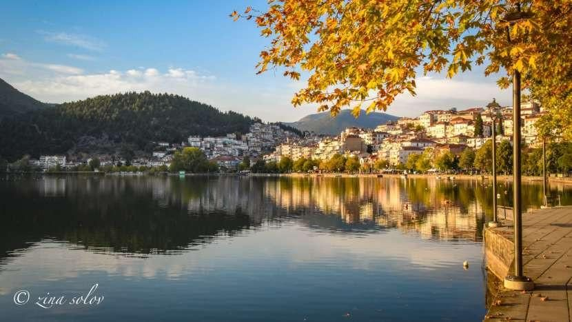
יוון, השכנה הקרובה והידידותית, תמיד מפתיעה מחדש. כבר טיילנו רבות ביוון, בכל פעם באזור אחר- 2019 פיליון ומטאורה (לא שילבנו את זגוריה כי הילדים היו קטנים מדי לנסיעות ארוכות כאלה), 2020- ברחנו בקורונה לפלופונס, בין לבין טיילנו בכרתים וקורפו ותמיד יש טעם של עוד.
יש לי נטייה מיד עם החזרה מחופשה כבר לחשוב על החופשה הבאה ולהזמין, כך יצא, כשנחתנו מצ׳כיה בתחילת מאי כבר התחלתי לחשוב לאן ניסע בחגי תשרי, שהשנה יוצאים באמצע אוקטובר, קר מידי להרבה מיעדי אירופה. אני מודה שהייתי בטוחה שהמלחמה תסתיים עד אז ובכל זאת כדי להיות בטוחים ידעתי שנזמין דרך אל על.
החצי שכרגיל לא סס להתחייב לשום דבר ובטח לא בזמן המלחמה כבר עיקם את האף ברגע שרק זרקתי את המילה חו״ל בחגי תשרי, מצד שני המילה יוון ישר מורידה לו את התנגדויות וכך הוחלט, למען שלום בית ניסע ליוון.
נתחיל עם מנהלות:
טיסות: טיסות סאן דור לסלוניקי (יותר קרוב לצפון יוון מאשר אתונה) בעלות של 250$ (כשמזמינים מראש המחיר יחסית סביר לזמנים אלה) מה8.10 ועד 20.10 (כי לחזור בשמחת תורה הקפיץ את המחיר ל-700$ לכרטיס).
רכב: שכרנו דרך בוקינג (כמו שתמיד עושים) הפעם של חברת drive (שכרנו דרכם בעבר והיו בסדר גמור) רכב suv וכל הטרולי נכנסו בבגאז בלי בעיה.
כבישי אגרה: כבישי האגרה מצויינים וממש מקצרים ומשפרים את נסיעה בין חלקי יוון, אבל הם לא זולים. שילמנו על הקטע מסלוניקי ועד פארגה (יציאה קצת אחרי יואנינה) 13 יורו. מצד שני זה חוסך המון זמן.
מלונות- הכל הוזמן דרך בוקינג:
בסלוניקי ללילה אחד מלון The Mavili Urban Stay- מלון חדש ונקי, חדר משפחתי מרווח. החיסרון שאין באמת חניה אלא חניון בהסדר שעולה 20 יורו ללילה (די יקר אבל מבדיקה שלי אלו המחירים באזור).
מלון Ideal House בפארגה, מלון משפחתי קטן וחביב בפארגה במרחק הליכה של 8 דק מחוף valtos
התאכסנו בוילה (שני חדרי שניה וסלון, גינת עצי פרי) מאוד נקי וחביב אבל אין קליטת ויפיי בכלל בוילה מה שממש הפריע לחוויה כי רצינו בערב לשבת בנחת בחוץ ולהתעדכן במה קורה בעולם.
בזגוריה ישנו בדירה מדהימה במונודנדרי Archontiko Rapti Stone Traditional House, בית אבן ישן ואותנטי, יש 2 יחידות ופאטיו משותף, מאובזר למופת, מאוד מומלץ.
בקסטוריה ישנו הדירה חמודה במרכז העיר עם נוף לאגם CK Lake View, הדירה נמצאת מעל חנות בגדים, ממש צופה על האגם, יש שפע חניה ברחוב בחינם וכמובן שפע מסעדות ובתי קפה במרחק כלום הליכה, מאובזרת למופת.
לילה אחרון ישנו במלון Ambassador Hotel Thessaloniki מלון פשוט ליד שדה התעופה שישנו בו במהלך הטיול ב-2019 חדר המשפחה סבבה לגמרי ומתאים לשהיה של לילה אחד מ/אל שדה התעופה.
אוכל: האוכל היווני טעים אבל אחרי 10 ימים די נמאס. השתדלנו לאכול ארוחת בוקר בדירה, צהריים לעשות פיקניק בטבע וערב במסעדה או לבשל בדירה. מחירי המסעדות ביוון עלו מאוד לאורך השנים כך שארוחה ממוצעת לארבעתינו עלתה בין 40-50 יורו.
מסלול הטיול: כאמור כבר טיילנו רבות ביוון, יוון היא מדינה ענקית ולעבור מאזור לאזור יכול לקחת כמה שעות טובות של נהיגה. מאז שאנחנו מטיילים עם הילדים אנחנו משתדלים לצמצם את זמני הנסיעות ברכב (כמובן כשאין ברירה אז נוסעים, הילדים ממש בסדר עם זה- יש להם טאבלט שמקבלים בנסיעות ארוכות לטובת שפיות נפשית של אבאמא), לכן אנחנו מנסים להתמקד בכל פעם באזור אחר. ב-2019 טיילנו בפיליון ומטאורה אז לא שילבנו אותן בטיול הזה (למרות שרוב המטיילים משלבים את פיליון ואני ממש לא מבינה למה, לדעתי פיליון שווה טיול בפני עצמה). גם את שמורת האולימפוס וצומרקה השארנו לפעם הבאה (הן אמנם קרובות במפה אבל גיחה לאולימפוס מאריכה את הדרך בעוד שעתיים, ובצומרקה בכלל מרחקי הנסיעות ארוכים ממש גם אם נראים קרובים במפה). אנחנו העדפנו ל״דקור״ פחות מקומות אבל לטייל בנחת, להנות מהטבע והמסלולים וגם לחזור אחר הצהריים לבית ולנוח ופשוט להיות בחופשה.
ואחרי ההקדמה ותיאור המנהלות אפשר להתחיל בסיכום הטיול:
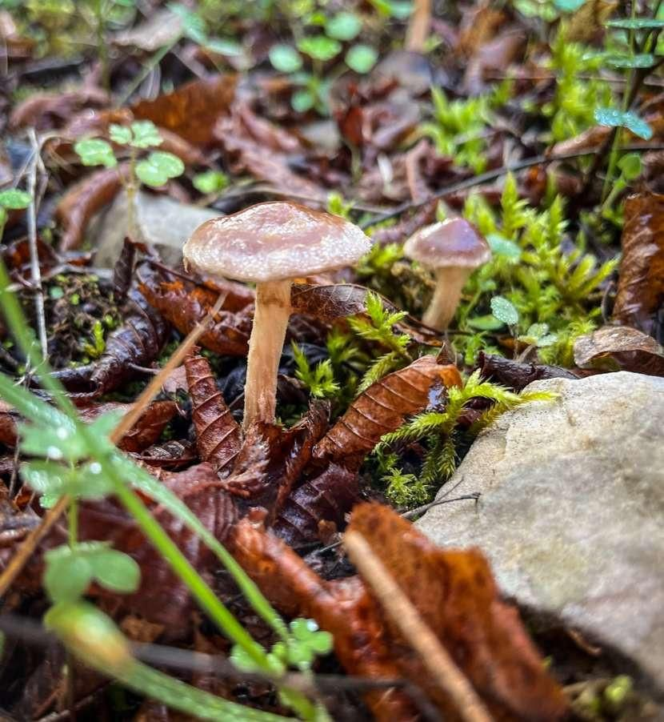
8.10.24: הגענו
עוד כשהזמנתי את הכרטיסים האמנתי שהמלחמה תיגמר עד אוקטובר, ואו כמה טעיתי, לא רק שלא נגמרה אלא הסלימה. אחרי ליל הטילים מאירן ב-1.10 היינו על קוצים כל הזמן אם הטיסה תמריא או לא, נכון הזמנו עם אלעל (סאן דור למען האמת) אבל מי יודע אם פתאום יחליטו לסגור מרחב אווירי או לבטל טיסה משיקולים שלהם? את האריזות עשינו יום לפני, לקחנו טרולי לכל אחד (וואלה היה מלא מקום), וכך נרגשים ועדיין לא מאמינים שנטוס הגענו לשדה. אבל טפו טפו הכל עבר חלק, הטיסה המריאה מטרמינל 1 בדיוק מופתי (ומפתיע) נחתנו בנמל התעופה מקדוניה שבסלוניקי בשעה שלוש אחר הצהריים.
ביציאה מהשדה פגשנו את השאטל של חברת ההשכרה drive (כבר שכרנו מהם באחד הטיולים הקודמים כך שקבלת הרכב הייתה ממש מהירה) אבל אז גילינו שיש לנו הזמנה כפולה. מסתבר שעשיתי הזמנה אחת באותו היום שהזמנתי כרטיסי טיסה ועם כל המלחמה שכחתי מזה והזמנתי שוב. למזלנו לאחר שיחה עם בוקינג הבעיה נפתרה וזוכינו על ההזמנה הקודמת (והיקרה יותר).
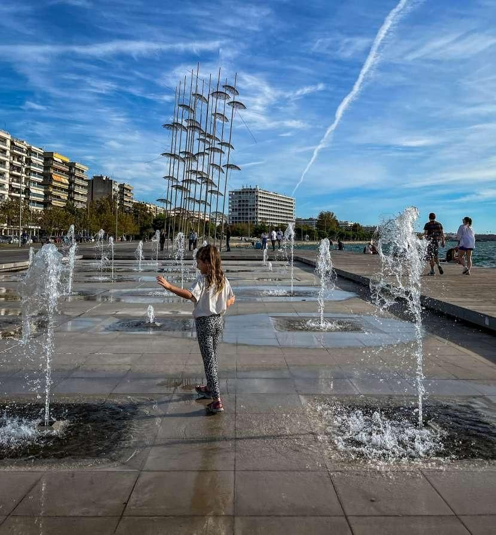
התחלנו לנסוע לסליניקי שם הוזמן המלון שלנו ללילה, חשבנו קודם להגיע למלון להתמקם ואז לצאת לטיילת אבל באמצע הדרך החצי הציע לנסוע עכשיו לטיילת ולהנות מהשקיעה ואחרכך כבר להגיע למלון וללכת לישון וזו היתה החלטה מעולה!
חנינו בבניין העירייה (גם ב-2019 חנינו שם) זה נוח וקרוב לטיילת ולא יקר. ויצאנו לסיבוב בטיילת המקסימה של סלוניקי. בגלל שזה אמצע השבוע הטיילת היתה ריקה, הצוציקים נהנו להשתכשך במזרקות ליד פסל המטריות, להסתכל על ספינות הפיראטים, הצוציק רצה גם לטפס על המגדל הלבן אבל פה כבר הוטל וטו. אכלנו באחת המסעדות בטיילת (לא משהו ולכן גם לא זוכרת אותה כלל), גלידה לקינוח וכשהתחיל להחשיך נסענו למלון. כאמור למלון יש הסדר עם חניון שנמצא 30 מטר לידו כך שישר חנינו שם. קיבלנו חדר משפחתי גדול ונוח, אחרי מקלחת יצאנו לסיבובון קטן בשכונה ומצאנו סופר קטן אז הספקנו להצטייד בנשנושים לערב ולנסיעה הארוכה המתוכננת לנו מחר.
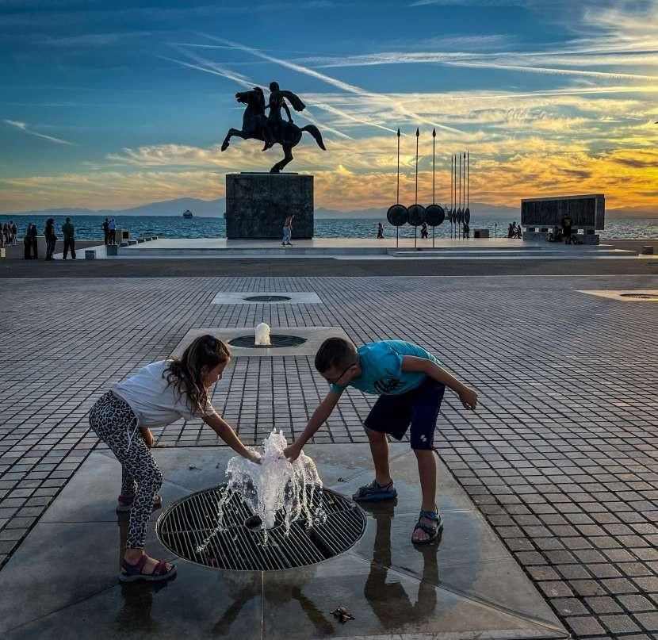
9.10.24: בדרכים
קמנו רעננים ומוכנים לנסיעה הארוכה שמחכה לנו היום. אחרי ארוחת בוקר סבירה במלון יצאנו לדרך. היום קצת סגרירי ומטפטף אבל לא קר. הנסיעה לפארגה הנמצאת בצד השני של יוון אמורה לקחת כ-4 שעות ללא עצירות על כביש מהיר, בכל זאת עם ילדים לא ניתן לנסוע מרחק כזה בלי עצירות ולכן תכננתי לנו עצירה ארוכה בעיירה מצובו שנמצאת בדיוק באמצע הדרך.
לוקח לנו כחצי שעה לצאת מהעיר סלוניקי הפקוקה, לפי גוגל מפות הדרך למצובו תיקח לנו כשעתיים וחצי וכדי לשבור את הדרך החלטנו לעשות עצירה לתצפית על גשר Ruins of Eleftherochori stone bridge.
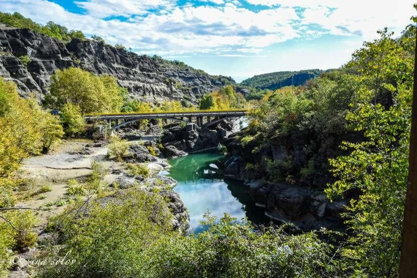
עלינו על הכביש המהיר שהוא מצויין וממש מקצר את הנסיעה בין חלקי יוון (לא הייתי רוצה לחשוב כמה זמן תיקח לנו הנסיעה ללא כבישי האגרה). בזמן שהילדודס רואים סרט בטאבלט אנחנו נהנים מהנופים היפים הנשקפים מהחלון, היום די סגרירי יש עננים גשם מטפטף ומעת לעת השמש מבצבצת מה שצובע את הנוף בצבעים יפיפיים ודרמטיים. הגענו לתצפית על הגשר, במקום יש גזיבו נחמד שאפשר לעצור לנשנש, ראינו את הנהר והסלעים, לא כלכך התלהבנו מהמקום אבל בכל זאת כדי לשבור את הנסיעה מדובר באחלה עצירה, עשינו הפסקת עשר קצרה, נשנושים ולדרך.
40 דקות מאוחר יותר הגענו למצובו, אין מילים לתאר את היופי של המקום כאשר העננים הסגריריים רק מוסיפים עוצמה להרים הנישאים והגגות הכתומים של העיירה. עצרנו לצילום, והקור הכה בנו, איזה הבדל בין סלוניקי וההרים, ממש קר.
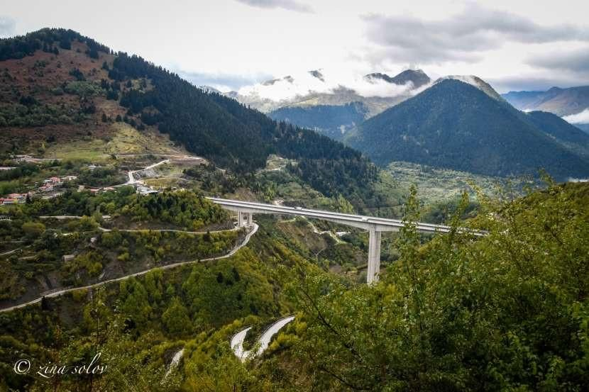
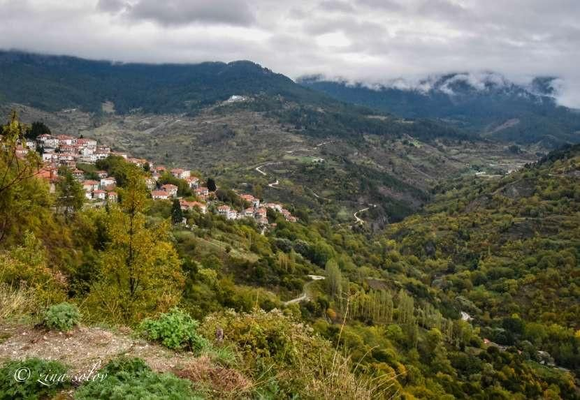
נכנסנו למצובו ואני מודה שהחניה במקום די מאתגרת, או שחונים בכניסה לעיירה והולכים כ-800 מטר או מנסים את מזלכם בחניון בעיירה שהוא די קטן, היה לנו מזל ולאחר ״רק״ שני סיבובים במקום מישהו יצא ותפסנו חניה. לבשנו בגדים ארוכים ומעילים ויצאנו לסיבוב בעיירה האלפינית המהממת.
בכיכר המרכזית עדיין יושבים זקני הכפר וצופים בתיירים המגיעים להסתכל על המזכרות הנמכרות. טיילנו בין הטרסות, עצרנו בגינת משחקים חביבה לפרוק אנרגיות לילדודס ומשם הלכנו לאכול צהריים במסעדה חביבה- Apokentro. שבעים עשינו עוד סבב תמונות ומזכרות בעיירה.
העיירה כל כך חמודה וסביבה יש כל כך הרבה מקומות מעניינים שלצערי לא היה לנו זמן לבקר שם וחבל, הנה כמה דוגמאות: שביל הדב (ursa trail), סכר האוס, מפלי Boulouvar Cascades.
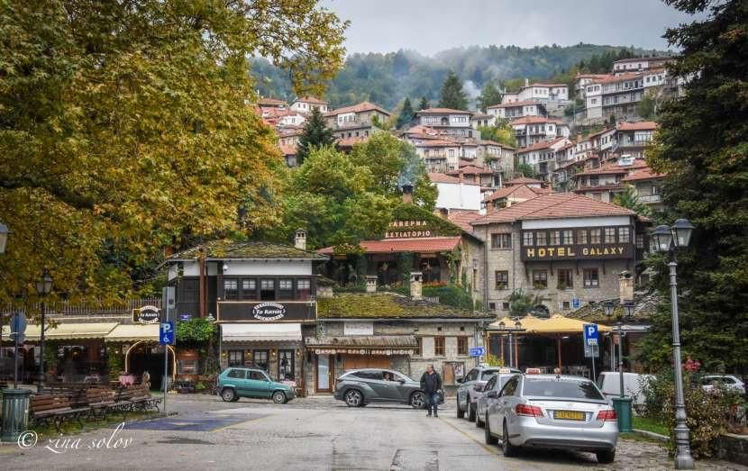
לא רצינו לעזוב את האזור עדיין, בבדיקה מהירה בגוגל נראה שיש ליד מפלים חביבים- Καταρράκτης Ανήλιου אז נסענו לראות אותם, לצערי הם לא כאלה מרהיבים בכדי להצדיק ירידה מהר ועלייה חזרה (עם רכב כמובן).
שבעים ומרוצים יצאנו למקטע השני של הנסיעה שלנו עד פארגה. שוב יוצאים לכביש המהיר, הנסיעה זורמת חלק, מזג האויר עדיין סגרירי. אחרי כשעה רצינו לעצור לקפה, אבל לא ראינו בשום מקום קפה, רק ביציאות מהכביש המהיר היה שילוט לקפה, באחד מהם החלטנו לקחת סיכון ולעקוב אחר השלטים בעקבות הקפה עד שמצאנו אחד. סה״כ הנסיעה בכביש המהיר מסלוניקי ועד היציאה לפארגה עלתה לנו כ-13 יורו.
הגענו לפארגה בשעות הצהריים המאוחרות, הנוף משגע- הרים נישאים שגולשים ישר לתוך ים כחול וצלול. הגענו למלון, לוילה שלנו ומיד יצאנו ברגל לכיוון החוף הקרוב- ולטוס- valtos. אמנם היה סגרירי וקריר אבל עדיין טבלנו רגליים במים הצלולים בהנאה רבה. את ארוחת הערב אכלנו במסעדת ״מנגו״ הנמצאת ליד המלון, שם גילינו מבעלת המסעדה שהגענו בדקה ה-90 של העונה, הם משאירים הכל פתוח עד ליום שני (14.10) שאז התיירים מדנמרק עוזבים את האי (המקום אגב שורץ תיירים מדנמרק) כי חופשתם נגמרת. לכן גם מבחר המנות במסעדה וגם מבחר האוכל בסופרים מאוד מצומצם.
חזרנו לוילה בערב ותכננו לשבת בכיף בחוץ בגינה הנעימה רק כדי לגלות שאין אות של ויפיי כלל בוילה רק בחניה- ממש אכזבה, בנוסף כמות היתושים שיש שם לא מביישת אף מדינה טרופית.
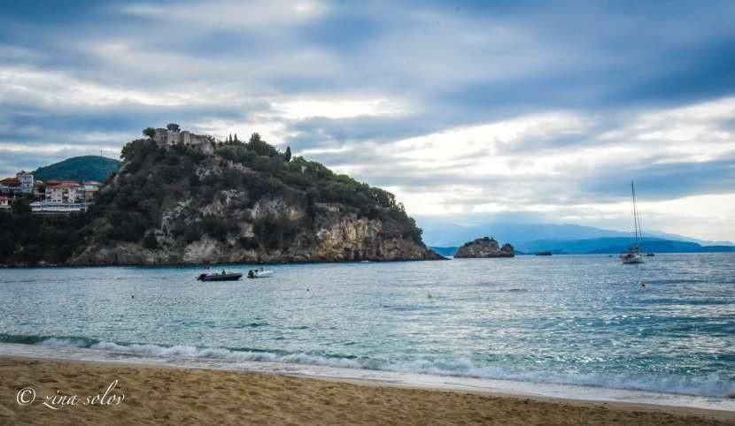
10.10.24: טעימה מפארגה
למרות שאנחנו כבר מחוץ לעונת הרחצה החלטנו לשלב את פארגה בטיול פשוט כי רצינו להנות טיפה מהים היווני הנהדר באזור הזה. שנה שעברה היינו עם החצי בקורפו והים שם פשוט נהדר, הן בטיולים של 2019 והן ב-2020 נסענו באמצע אוקטובר ועדיין שחינו בים ולכן רציתי לנצל את ההזדמנות שאנחנו גם ככה באיזור ולגנוב לנו איזה יומיים של חופים, ההימור השתלם! קמנו למזג אוויר נהדר, בערב קריר ונעים, בבוקר מתחמם ולא לוהט (ג׳קט קל בבוקר ובערב ושאר היום היינו עם קצר).
אגב, בעונה זו השמש זורחת לקראת שבע וחצי בבוקר כך שאין מה למהר לקום ואפשר לצבור שעות שינה. עדיין הצוציקים קמו בשבע בבוקר כך שבשעה שמונה כבר התייצבנו לארוחת הבוקר המוגשת בגינת המלון. אמנם יכלנו להכין לבד אבל אחת הסיבות שהזמנתי את המלון היא הביקורות המעולות על ארוחת הבוקר, שהיתה נחמדה מאוד וכללה המון ריבות ומאפים תוצרת בית אבל פרט לכך לא משהו ואו אבל כשאין וייפיי בוילה זו הזדמנות טובה להתעדכן בחדשות הבוקר.
שבעים חיכינו קצת בוילה שהשמש תחמם מעט את האוויר ויצאנו להליכה קצרה וקלילה עד לחוף ולטוס היפיפה. היום מעט סגרירי ויש עננים אבל חמים ונעים. שילמנו 10 יורו על מיטות במלון valtos resort תכלס אפשר היה לפרוס מגבת בחוף אבל תכננו לשהיה ממושכת אז כבר השקענו במיטות. החצי התפנק על קפה, הצוציקים מיד נכנסו לטבול רגליים במים הקרים ואז רצו למזח וקפצו למים. כמו כל חוף יווני טוב גם כאן המים צלולים ממש, ונהיים עמוקים די מהר. בשלב מסוים אזרתי אומץ ונכנסתי עם הצוציקים לשחיה, אני מודה שבהתחלה המים מקפיאים אבל אחרי שמתרגלים מעט ואז פשוט טובלים את כל הגוף ומתחילים לשחות נהיה כלכך כיף ונעים שממש לא מרגישים שהמים קרים, הם אפילו ממש נעימים וכיפיים, בדיוק כמו שאני אוהבת (אחלה פיצוי אחרי החופשה באוגוסט בקפריסין שלא מצאתי שם חוף מושלם, אין על החופים של יוון).
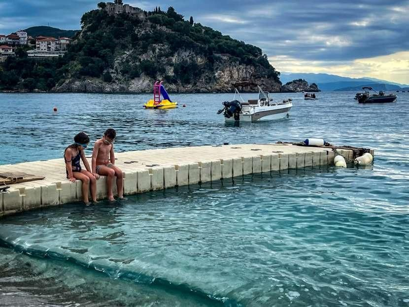
החלטנו שאת ארוחות הצהריים נאכל בוילה שלנו כך שלקראת אחת צעדנו חזרה לוילה, למזלנו בדרך יש קמפינג ומינימרקט, הצטיידנו בירקות לסלט, פסטה ונקניקיות לילדים (אין לי כוח לריב איתם על אוכל בטיול הזה שיאכלו זבל אם זה מה שהם רוצים), וקצת שרימפס לחצי ולצוציק החובב.
אילתרנו אחלה ארוחה בגינה שלנו שמוקפת עצי פרי, החצי מיד קלט עץ רימונים בפינה עם רימונים בשלים שאוטוטו ירקיבו ומיד קטף לנו כמה, מהם סחט מיץ רימונים מעולה! היו שם גם תפוזים שקטפנו שסחטנו למיץ או סתם חתכנו לצוציקים לנשנש.
אחרי מנוחת צהריים יצאנו רגלית לתור את פארגה. מחוף ולטוס יש שביל שמוביל למצודה הונציאנית על ראש הצוק, סה״כ מדובר ברבע שעה גג הליכה מהמלון, כבר לא חם וממש נעים ללכת רק גדודי היתושים לא מרחמים עלינו ועוקצים בכל רגע נתון.
טיפסנו לצוק המצודה, סביב יש ים מסעדות חצי ריקות, מרגישים ממש שזו סוף העונה, מצד שני הרבה יותר כיף ככה בלי גדודי תיירים. לצערי המצודה היתה סגורה למבקרים אבל ממנה נשקף נוף משגע על פארגה. לאט לאט התחלנו לרדת בסמטאות המקסימות של העיירה המלאות בתי קפה, מסעדות וחנויות תיירים.
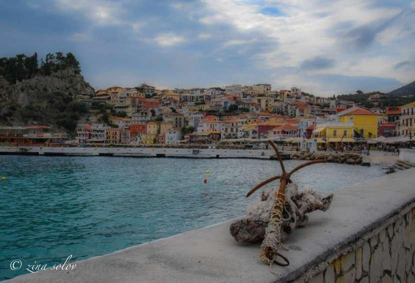
ירדנו על הטיילת וראינו את העיירה היפה על רקע המצודה, שוטטנו בטיילת, ראינו את האי הסמוך שבקלות ניתן לשחות אליו, צוציק נורא רצה אבל לא באנו עם בגדי ים או נעלי ים כדי לטייל אחרכך באי. התלבטנו אם לאכול ארוחת ערב במסעדות על הטיילת או דווקא לעלות חזרה ולאכול במקום עם נוף, החלטנו על נוף נטו כי ידענו שאם הילדים יאכלו עכשיו אין סיכוי שיהיה להם כוח לטפס חזרה למצודה ולרדת בצד השני וחזרה לדירה, לכן תוך כדי שיטוט בסמטאות לאט לאט עלינו שוב למעלה וממש ליד המצודה ראינו מסעדה חצי ריקה עם נוף משגע- Kastro 1380 Restaurant Cafe Bar. המסעדה נראית די fancy אבל אנחנו גם ככה אוהבים להזמין המון מנות פתיחה וכך לגוון את הארוחה. מנות הפתיחה היו מעולות! פיצקה חיסלה את הנאגטס שלה (מחזה נדיר שהילדה מסיימת מנה!) צוציק טרף את כדור השרימפס שלו, ואני נהנתי כלכך מהמנה שלי של גבינה מטוגנת ופטריות מטוגנות שהיה מעולה! (החצי לא אוכל ארוחת ערב אבל טעם גם טעם מכל המנות ואישר שהן מעולות).
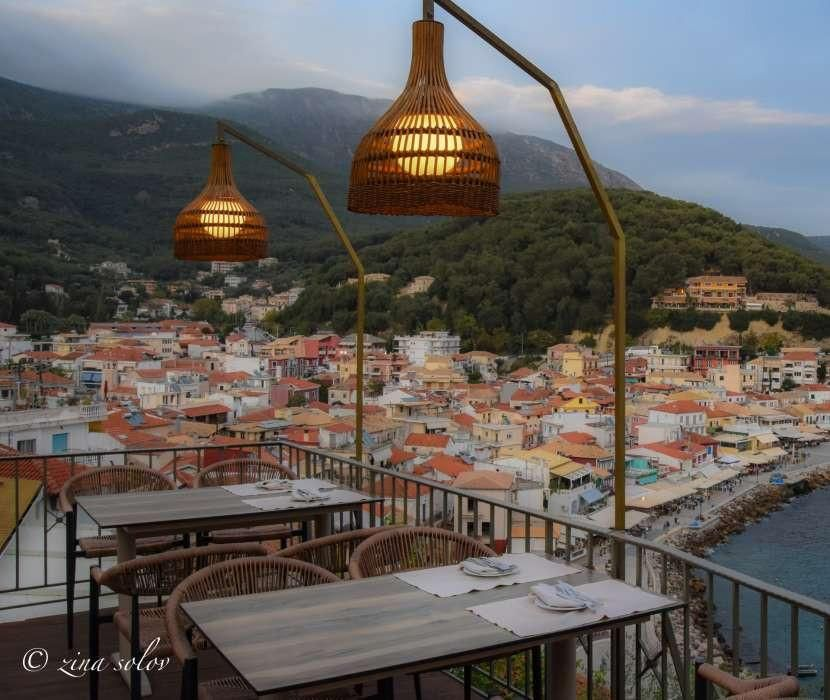
שבעים ומרוצים עצרנו לעוד מבט אחד על העיר מהמצודה וירדנו חזרה לולטוס ולמלון שלנו, בדרך זכינו לראות שקיעה יפה מעל ולטוס למרות העננים שהתפזרו ואז ראינו את הירח זורח ממש מעל המצודה- מחזה משגע, סיום מושלם ליום מצויין.
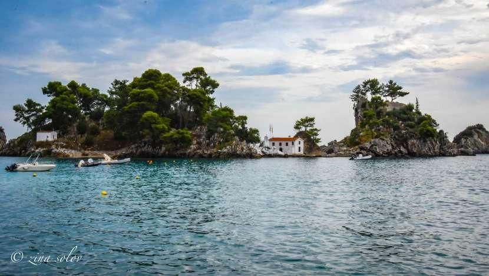
11.10.24: החיפוש אחר החוף המושלם
התחלנו את היום עם עליה למצודת עלי פאשחה שהיה פעם שליט האזור ובנה מצודה מטורפת המשקיפה על כל הסביבה מראש ההר. הכניסה למצודה בחינם, ובגדול פרט מהנוף אין שם שום דבר מיוחד, הייתי ממליצה לעלות לשם בשקיעה ולא בבוקר כמו שאנחנו עשינו אבל חששתי שלא יהיה לנו כוח לעלות לשם בערב ולכן פתחנו את היום בביקור במצודה.
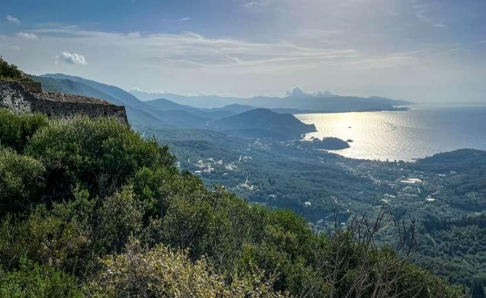
משם תכננתי לנו ביקור בשלושה חופים שנראו מעולה בגוגל. החוף הראשון ברשימה היה חוף Sarakiniko, רק מה שלא חישבתי זה זמן הנסיעה, החוף נמצא די קרוב במפה אבל צריך לרדת את כל ההר עד אליו, מה שלקח לנו כחצי שעה בדרכים צדדיות ועקלקלות, אבל היה שווה כל רגע כי הגענו לחוף משגע, מתחרה אמיתי להמון מחופי תאילנד (היינו בתאילנד אז אני בהחלט יכולה לשפוט באופן אובייקטיבי).
חוף קטן ושקט, יש מיטות בחינם אם קונים משהו בקפיטריה, בעונה יש שם מלון שכרגע שומם וחוץ מבעלי המסעדה ועוד שני זוג קשישים שעסוקים בשחייה אין שם אף אחד. מיד פורסים מגבת ורצים למים, כמו בוולטוס גם פה המים קרים אבל ברגע שנכנסים פנימה עם כל הגוף נהיה נעים ממש. המים כלכך צלולים שלא צריך בכלל משקפת כדי לראות מה יש בקרקעית.
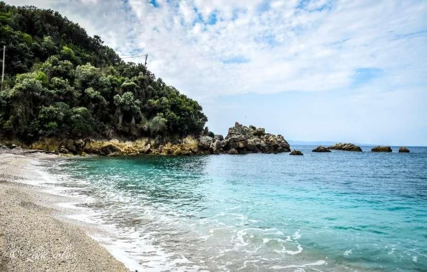
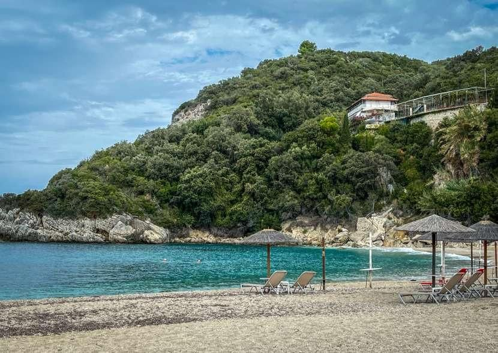
היינו צריכים להשאר ולבלות את היום בחוף הזה אבל יצר ההרפתקנות שלי גבר ורציתי לראות עוד חוף, התלבטנו אם לנסוע לחוף קרוב יותר לפארגה, שממש מעבר לגבעה במפה, או לחוף רחוק יותר לכיוון סיבוטה- מבחינת גוגל זמן הנסיעה היה זהה, בסוף הוחלט על החוף הקרוב.
ניסינו להגיע לשם אבל הכביש שגוגל הציע היה כביש עפר לא ברור בין ההרים, לכן עלינו חזרה את ההר עד הכביש הרגיל ונסענו לעיירה ממנה יורדים לחוף רק כדי לגלות שהכביש שגוגל מציע פשוט לא עביר.
לא ויתרתי, זכרתי שצוציק רצה לשחות לאי שמול חוף פארגה, שמנו פעמינו חזרה לפארגה, כיוונתי את הניווט לחניה של פארגה ומשם שנלך ברגל אבל ברגע שנכנסנו לאזור החניה חטפנו חום מכמות האנשים, הרכבים והאנדרלמוסיה שמיד נעלם לנו החשק לחפש פה חניה. לצערי הבנתי שכדי להגיע לחופים של פארגה נצטרך לרדת ברגל ולעלות חזרה. ויתרנו על התענוג ופשוט חזרנו לחוף ולטוס, שם ניתן לחנות בקלות מול החוף, וכך נגמרה הרפתקאת החופים שלי אותה סיימנו ברחצה כיפית בוולטוס.
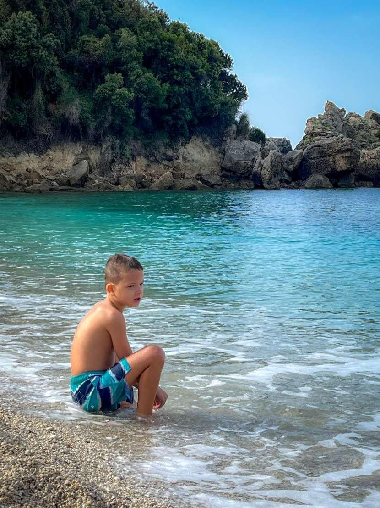
גם היום אילתרנו ארוחת צהריים מפסטה נקניקיות סלט ושרימפס ואחרי מנוחה הגונה, וטבילה של צוציקים בבריכה של המלון שהיתה קפואה, יצאנו שוב לשוטט לכיוון המצודה. הפעם אכלנו באחת המסעדות שצופה על מפרץ ולטוס ולא על פארגה, רואים שסוף עונה כי אין אנשים וגם המנות שיוצאות לא טעימות כי הן פשוט מופשרות. בכל זאת הצוציקים נהנו מהפיצה שלהם ואנחנו מהנוף (והיתושים נהנו מאיתנו, אכלו לשובע). שוב עלינו למצודה הוונציאנית לתצפית וירדנו חזרה להליכה קלילה ונינוחה חזרה לוילה שלנו.
12.10.24: אל ההרים
היום אנחנו עוזבים את אזור פארגה ועולים להרים לזגוריה, אבל לפני כן כדי לשבור את הנסיעה אנחנו עוברים ביואנינה, העיר הגדולה של מחוז אפירוס. יואנינה שוכנת על שפת אגם פמבוטיס, יש לה חומות שמתחמות את העיר העתיקה. לאחר התארגנות בוקר והשלמת קטיף של תפוזים ורימונים וסחיטת מיצים טעימים לדרך אנחנו יוצאים לכיוון יואנינה, מדובר בנסיעה של כשעה וחצי מפארגה.
חנינו באחד החניונים שסביב האגם ויצאנו לשוטט בעיר. טיילנו סביב האגם, נכנסנו לתוך חומות העיר והסתובבנו קצת בעיר העתיקה, אלכנו צהריים באחד מבתי הקפה המשקיפים לאגםֿ. משם קינחנו בגלידת קרח (שמכינים בצורה מיוחדת כזאת על משטח קפוא). הילדים מיצו את העיר די מהר והתחילו לקטר, לכן המשכנו למערת הנטיפים פרמה הנמצאת ליד יואנינה.
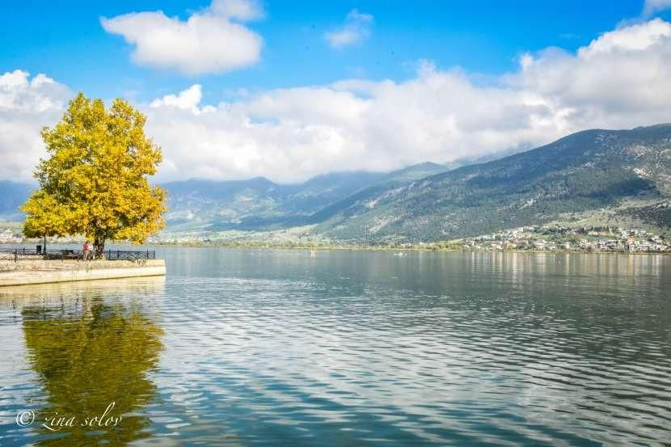
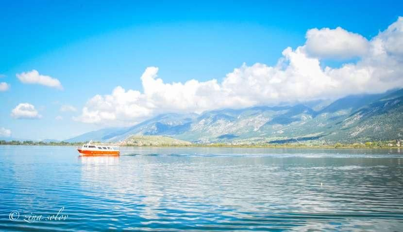
שימו לב אין חניה מסודרת ליד המערה (יש בתשלום) אבל אפשר למצוא חניה בחינם ברחובות הסמוכים. קנינו כרטיסים בעלות 24 יורו, אין כניסה לבד אלא רק במסגרת סיור שמשכו 45 דקות. חיכינו 20 דקות לסיור ונכנסנו למערה. מדובר במערה גדולה ומרשימה שהתגלתה במקרה ע״י התושבים בזמן מלחמת העולם השניה כשחיפשו מקום להסתתר מהפצצות. המערה היא חלק מנהר תת קרקעי, היא מתוארכת כבת מיליון וחצי שנים, גודלה הכללי הוא כ- 15 קמ"ר. במערה ישנם 19 סוגים שונים של זקיפים ונטיפים (לשם השוואה: ברוב מערות הנטיפים בעולם יש 6 עד 10 סוגים). במערה התגלו חדרים שונים, בעלי חיים שונים ומיוחדים וגם עצמות של דובי מערות שהיו חיים שם לפני כ- 600,000 שנים. הטמפרטורה במערה היא כ- 18 מעלות באופן קבוע, והלחות במערה מאוד גבוהה, גם בגלל גשמים שיורדים באזור מים ממשיכים לחלחל באופן קבוע מתקרת המערה. לא התמזל מזלנו והמדריכה שהובילה את הסיור היתה נוראית. היא הקריאה מדף, וכשניסתה להסביר באנגלית (גם תוך קריאה מדף) אי אפשר היה להבין כלום ושום דבר. לדעתי עם מדריך טוב שיודע אנגלית הסיור יכול היה להיות הרבה יותר מעניין, אנחנו הרגשנו שהוא סתמי ממש, שבו היא הצביעה על זקיפים ונטיפים מסוימים ואמרה look here ובזה הסתכם ההסבר.
הסתובבנו במשך 45 דקות בחללים וראינו סוגים שונים של זקיפים ונטיפים, לתחושתי, יפה ככל שתהיה הערה, כאין בה שום דבר מיוחד שאין במערות נטיפים אחרות שטיילנו בהם ביוון או ברומניה. זה יכול להיות אחלה פתרון ליום גשום אבל לא הייתי משקיעה זמן לנסוע לשם במיוחד. בסוף הסיור ולאחר עליה בכמה מדרגות חזרה מעלה יוצאים מהצד השני וזוכים לתצפית יפה על אגם יואנינה, מהיציאה לנקודת ההתחלה יש הליכה נעימה של כ-7-10 דקות חזרה.
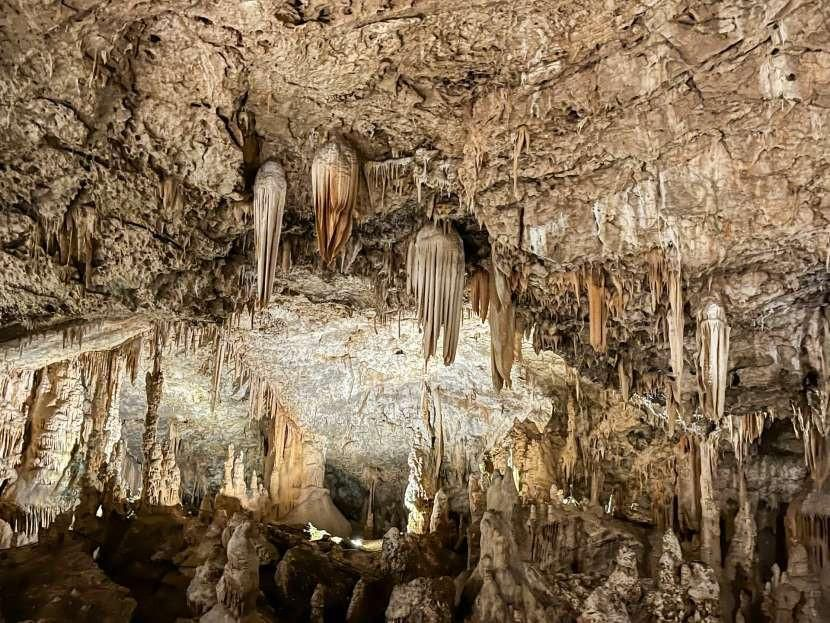
התחנה האחרונה שלנו ביואנינה זה הסופר. אין בזגוריה סופרים אלא שני מינימרקטים קטנים בעיירות אריסטי וקיפי, בגלל שאנחנו נוסעים ל-5 לילות לזגוריה צריך להצטייד באוכל ורצוי בהרבה. עצרנו בסניף AB והצטיידנו בכל טוב. מיואנינה יש לנו נסיעה של 40 דקות לכפר שלנו מונודנדרי. התלבטתי מאוד היכן לחפש מקום לינה בזגוריה, חלק ממליצים על פפיגו אבל לא רציתי לנסוע את כביש הנחש בכל יום, אריסטי זה פתרון לא רע אבל לא ראיתי שם משהו ממש מזמין (הריזורט שלהם נראה מפנק אבל ל-5 לילות זה יותר מידי, מעדיפים בית חביב ונחמד ונעים שיהיה יחסית במרכז) וכך מצאתי את הדירה המדהימה במונודנדרי.
מונודנדרי זה כפר יפיפה ודי שוקק חיים בעונה זו, הוא נמצא ממש על קניון ויקוס ויחסית במרכז זגוריה כך שהנסיעות לכל מקום לא עלו על 50 דקות. יש שם הרבה מסעדות וכמובן שם שביל הליכה מקסים ממרכז העיירה לתצפית על הקניון.
הבית שלנו הוא בעצם בית משפחה עתיק, כמו כל בית בזגוריה הוא מוקף חומה חיצונית ובפנים יש חצר פנימית ויחידות דיור עצמן. בבית יש 3 יחידות דיור: 2 להשכרה ויחידה אחת לשימוש המשפחה (כשהם מגיעים לסדר את הבית לאורחים) יש פינת כביסה ובעצם מדובר בבית אותנטי ומדהים לשהיה. השכנים שלנו היו משפחה ישראלית עם ילדים באותו הגיל של הצוציקים שלנו כך שהחיבור היה מיידי- את ארוחות הבוקר והערב אכלנו יחד בפאתיו המשותף.
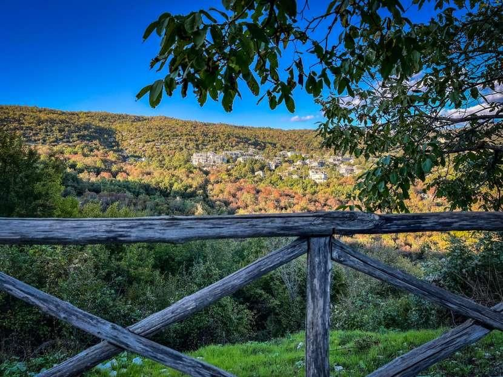
כבר כשנכנסנו לזגוריה נפעמנו מהיופי, תחילת השכלת, הרים גבוהים מנוקדים בכפרים והכי חשוב זה האוויר הנקי והצלול. פרקנו את הציוד בדירה, בעל הדירה המקסים השאיר לנו גם מלא מצרכים לשימוש וגם יינות מתוצרת עצמית.
החלטנו לנצל את היום עד תום ויצאנו להליכה קלילה ונעימה לתצפית על קניון ויקוס. השביל יוצא ממרכז הכפר למטה, חלפנו על פני מסעדות מקסימות של מונודנדרי וירדנו עד התצפית. ממש לפני המנזר יש מרפסת תצפית חביבה שממנה נשקף חלק מהקניון, אבל ניתן להיכנס לתוך המנזר ושם מאחת המרפסות נגלה נוף עוד יותר יפה של הקניון. לדעתי זו התצפית הכי יפה של קניון ויקוס (עשינו את כולן) אולי בגלל שהיינו שם בשקיעה וכל הקניון נצבע בצבעי שקיעה מקסימים.
חזרנו לבית ונתנו לילדים להשתולל יחד ולעשות הכרות בזמן שהכנו ארוחת ערב. איזה כיף להיות בזגוריה עכשיו ממש מרגישים שהטיול התחיל!
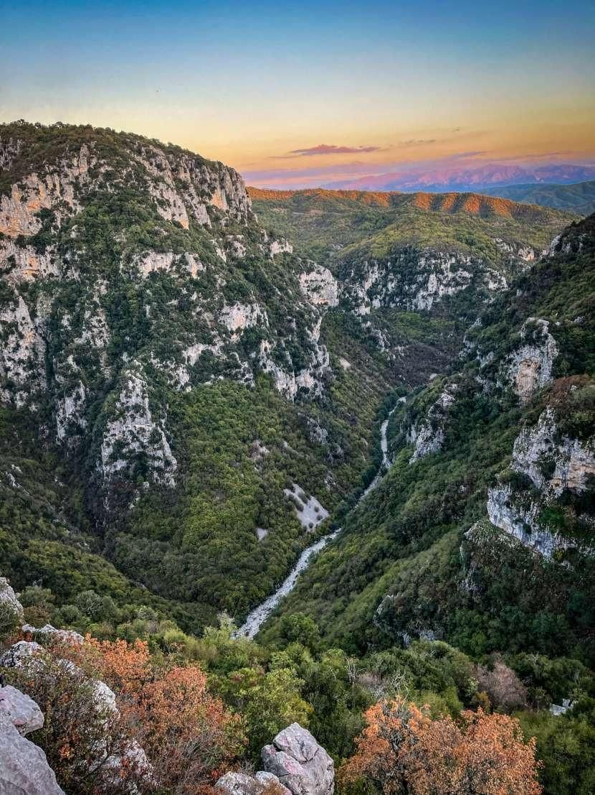
13.10.24: נהרות ותצפיות
היום מתחילים את הטיולים בזגוריה, ואיך אפשר בלי המסלול הכי מפורסם- דור הקרח. מדובר במסלול של 5 ק״מ לכיוון שניתן להתחיל אותו או מגשר אריסטיֿ/פפיגו ולצעוד לכיוון גשר קליידוניה או הפוך- מגשר קליידוניה ועד אריסטי. גם האת מסלול של הראפטינג בוידומאטיסשמתחילים מגשר אריסטי ומסיימים בקליידוניה. החלטנו שנתחיל את המסלול מגשר קליידוניה דווקא ולא נעשה את כולו (אלא נזרום לפי מצב הרוח).
אחרי ארוחת בוקר מפנקת וכשהשמש סוף סוף זרחה יצאנו לדרך, מדובר על נסיעה של 50 דקות לגשר קליידוניה. בבוקר די קריר אז מתלבשים בהתאם, מיד כשצאנו ממונודנדרי ופנינו לכיוון ויטסה, נגלה לנו מחזה משגע של עננים שטרם עלו מעלה וכיסו את הנוף, כמובן שעצרנו לתמונות.
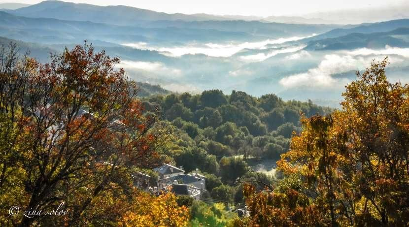
הדרך עוברת בנופים מדהימים של כפרים, שדות עם פרות, עיזים וכלבי רועים. מול אריסטי זכינו לראות שוב את העננים. הגענו לגשר קליידוניה, שימו לב שהמטרים האחרונים של הדרך הם דרך עפר מתוחזקת. יש חניה במקום, חנינו וכמובן שהלכנו מיד לראות את הגשר ואת נהר הוידומאטיס שנחשב לאחד מהנהרות הצלולים ביותר באירופה עם מים קרים בטמפ של 3-5 מעלות.
חצינו את הגשר ויצאנו למסלול. ממליצה לכם להשתמש באפליקציה המעולה של mappy.cz תוכנה צ׳כית שמראה שבילי הליכה ומאוד נוחה לשימוש בכל אירופה.
כאמור התחלנו את המסלול שעובר לאורך גדת הנהר. בשעה מוקדמת זו (10 בבוקר) עדיין לא היו הרבה אנשים במסלול (גם כי הרבה מתחילים מאריסטי וגם כי מי שעושה שייט רק מתחיל ב-10 באריסטי ויקח זמן עד שיתחילו להגיע לנקודת הסיום).
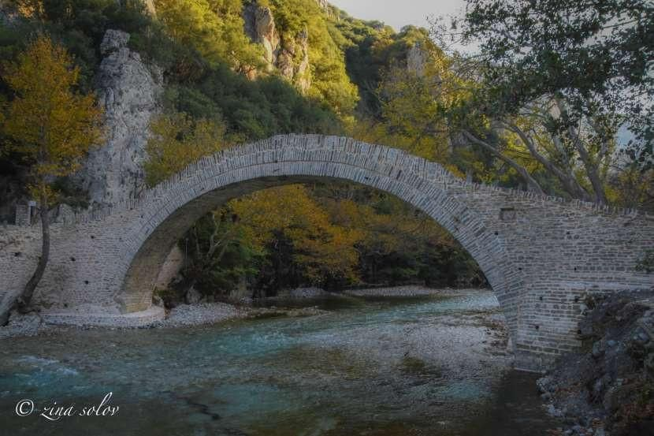
המסלול קליל, אין עליות או טיפוס, רק שביל לאורך הנהר, אפשר לרדת ולטבול רגליים, אפשר לשבת בפינה מוצלת תחת עצי השלכת ולנשנש, המסלול מקסים. לא סיימנו את כולו כי הרגשנו שזה די חוזר על עצמו, שביל לאורך הנהר, כך שהלכנו כמעט 2 ק״מ עד שנמאס לנו, מצאנו פינה מקסימה בה המים בצבע טורקיז משגע, טבלנו רגליים ונשנשנו הפסקת עשר. אז גם התחילו להגיע הסירות הראשונות של הראפטינג. שמחתי שלא הזמנתי רפטינג, הנהר ממש רגוע ורדוד בעונה הזו ומרגיש לי שהראפטינג די משעמם ולא מצדיק את המחיר. החצי כמובן היה מעדיף את הראפטינג על פני מה שאני תכננתי (רמז- מחר ).
כשחזרנו לגשר התיישבנו בפינה ונתנו לצוציקים להשתכשך במים הקפואים. כשמיצינו התחלנו בנסיעה חזרה לכיוון מונודנדרי. רצינו מנוחה בדירה ובערב לצאת למסעדת הפיטריות בויטסה, אבל בהערכה מחודשת החלטנו לעצור לפיקניק בנוף יפה ולהמשיך לטייל, וכך עצרנו לפיקניקון ליד ספסל מקסים לא רחוק מויטסה ומשם המשכנו לתצפית אוקסיה ויער האבנים שנמצאים ממש ליד הכפר שלנו במונודנדרי.
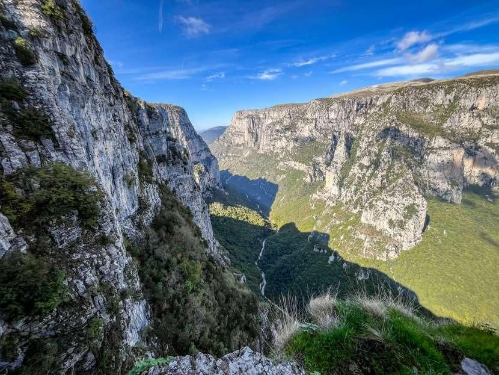
קצת מידע על קניון ויקוס: אורכו כ-32 ק"מ, עומקו נע בין 120 ל-1350 מ', ורוחבו נע בין 2500 מ', לבין מטרים בודדים בלבד בחלקו הצר ביותר. ערוץ זה מוכר על ידי ספר השיאים של גינס בתור הערוץ "העמוק ביותר ביחס לרוחבו" בעולם. הערוץ מנקז מים ממספר נחלים לתוך נהר הוידומאטיס אבל המים בערוץ הם עונתיים (בתקופה זו אין מים בערוץ). ניתן לרדת ולטייל בערוץ מהכפר מונודנדרי או ויקוס ומשם עלות לעוד כפרים.
אנחנו כאמור נוסעים לתצפית אוקסיה, מהחניה של הרכב יש הליכה קצרצרה של כמה מאות מטר עד התצפית- מרפסת אבן, ממנה נשקף נוף מטורף על הקניון. שימו לב משם יוצא שביל על דופן הקיצון המוביל לנקודת תצפית טובה יותר, ניתן ללכת שם ממש בזהירות כי אין דפנות להאחז- לאמיצים בלבד ובטח בימים ללא רוח. כשחזרנו מהתצפית ראינו מולנו חבל מתוח מעל הקניון ולוליינית שחוצה את הקניון בהליכה על החבל המתוח בין שתי גדות הערוץ, כל אחד והאדרנלין שלו…
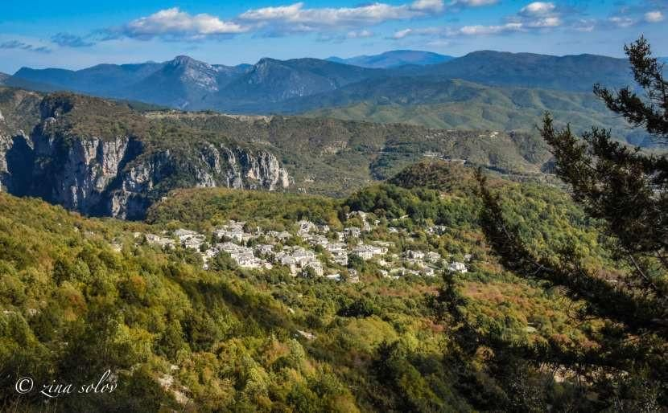
משם עצרנו לסיבוב קצר ביער האבנים, אישית לא כלכך התלהבתי מהמקום- הרבה אבני צפחה פזורות במקום ותיירים הרכיבו מהם רוג׳ומים וכיתובים, כמובן שמצאנו את הכיתוב של עם ישראל חי ולהחזיר את החטופים. הצוציקים נהנו להם מלהרכיב רוג׳ומים בזמן שאנחנו התחרדנו בשמש.
טוב סוף סוף אנחנו כבר רעבים ולכן החלטנו לעשות ארוחת ערב מוקדמת (או צהריים מאוחרת?), נורא רציתי מסעדת פיטריות, עכשיו זו העונה לפטריות וממש פינטזתי על ארוחת פטריות מגוונת, מצאתי הרבה המלצות על המסעדה הזו- KANELLA & GARYFALLO The Mushroom Restaurant בויטסה אולם כגודל הציפיה כך גודל האכזבה. הגענו למסעדה מלאה יחסית, ומעוצבת יפה, קיבלנו שולחן, עד כה הכל טוב, מהסתכלות בתפריט נראה שיש מבחר לא רע אם כי מאוד יקר אבל זרמנו, כמובן שחצי מהמנות לא היו זמינות… הזמנתי פרטיות מטוגנות ומרק פרטיות, לילדים תפוחי אדמה עם גבינה מקומית ובעלי הזמן המבורגר. לא חושבת שהיתה מנה שאשכרה היתה טעימה, המטריות היו שרופות, המרק ממש לא טעים, ההמבורגר מזעזע אולי תפוחי האדמה והגבינה היו איכילים, ואו איזה אכזבה נוראית! מאוכזבים חזרנו לדירה למנוחה, לזכות החצי יאמר שהוא ממש השקיע בארוחת הערב והכין לנו סטייקים א״א.
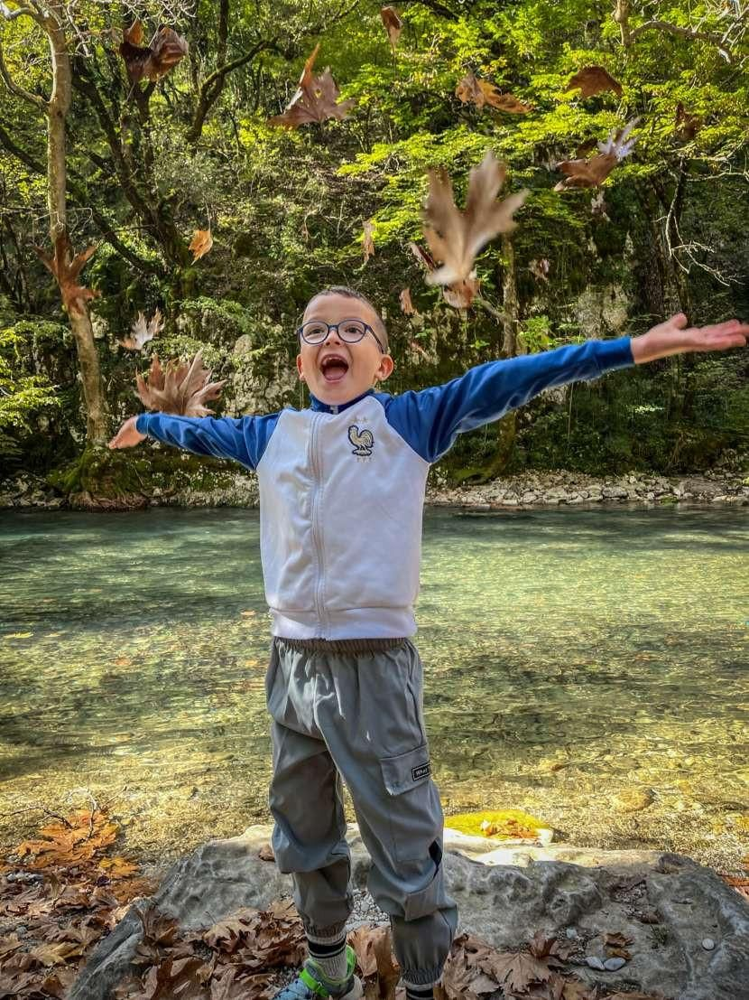
14.10.24: סנפלינג מפלים
היום אנחנו עושים את ה-פעילות, קניונינג או בשמו האחר ״סנפלינג מפלים״. התכתבתי עוד בארץ עם המפעילים, יש את alpine zone ו-via natura שניהם מציעים מסלולים החל מגיל 5 בקניון nefeli שסמוך לפפיגו. בחרנו באלפין זון כי הם היו זולים יותר 55 יורו לאדם וגם כי היו זמינים יותר במענה במיילים. נקודת המפגש היא החניה בכפר פפיגו בשעה 10 בבוקר, אלא מה? ב-off season ביוון יש נטייה לשפץ כבישים והגיע תורו של כביש אריסטי פפיגו שנסגר לתנועה בכל יום עבודה מתשע בבוקר ועד שלוש אחר הצהריים, כך שהיציאה שלנו לטיול הוקדמה לשעה 9 (שנספיק להגיע לפפיגו לפני החסימה), מבחינתינו זה אומר לקום מוקדם ולצאת לדרך עם הזריחה.
בשבע צלצל השעון המעורר, עדיין חושך בחוץ, אבל כולם קמים מהר ומתארגנים, נשנוש קורנפלקס לילדים, אורזים את האוכל (שהכנו אתמול) ויוצאים לדרך עם אור ראשון. מיד אנחנו מתוגמלים במחזה מרהיב של זריחה מעל עננים ממש בעיקול של הכפר ויטסה. מחזה דומה נצפה גם בירידה לאריסטי. כשחצינו את גשר אריסטי פפיגו (הצד השני של מסלול דור הקרח מאתמול) נגלה נוף משגע של נהר הוידומאטיס על רקע עצי השלכת, היות ועברנו את החסימה והשעה שמונה ועשרים יש לי זמן לצלם כמו שצריך בלי אנשים ברקע.
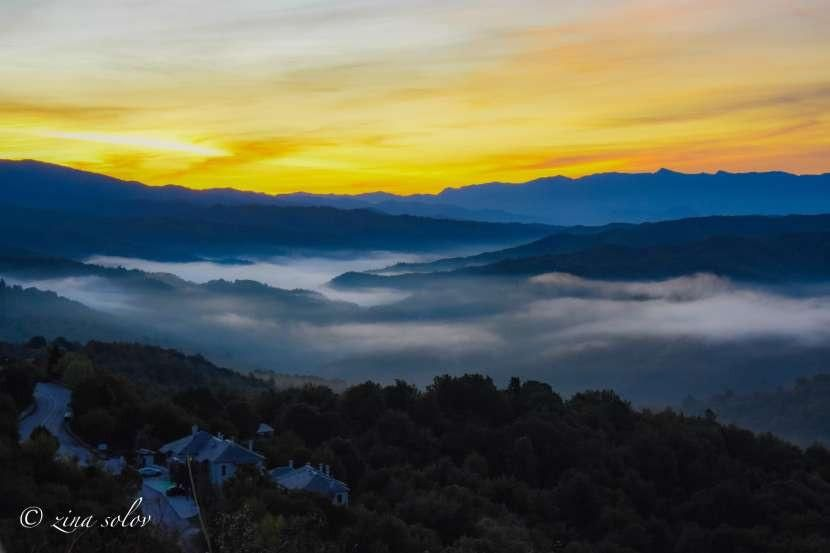
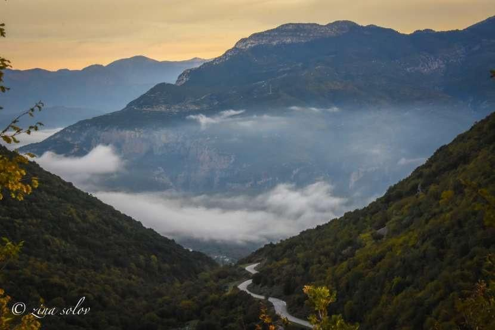
המשכנו בנסיעה בכביש הנחש המפורסם (לא מתקרב בפיתוליו לכבישים כמו דרך הטרולים בנורבגיה או אפילו הטרנספגרשן ברומניהֿ, אבל עדיין חביב מאוד). הגענו לחניון של פפיגו בשעה רבע לתשע, מספיק זמן לקפה ופאי פיטריות מהקפיטריה הסמוכה (זה אחד הפאים הכי טעימים שאכלתי ונראה בכלל שהוא הוכן אתמול וחומם הבוקר).
פגשנו את המדריכים, מסתבר שהמשפחה השניה שהיתה צריכה להיות איתנו הבריזו ויש לנו טיול פרטי! שני מדריכים מלווים אותנו, קיבלנו חליפות בידוד, גרביים, ומעילון כי בכל זאת קר בחוץ ויצאנו לדרך.
מתחילים לרדת לכיוון קניון נפאלי שם אנחנו יורדים ב-4 מפלים (3 קטנים ואחד גדול של 17 מטר). בזמן הזה המדריך מסביר לנו על ההרים מעל פפיגו, על אגם הדרקון (טרק של 8 שעות שנעשה כשהילדים יגדלו מעט) ועל מערת הכבשים (שמצאו בור עם מלא עצמות כבשים שפשוט נפלו לשם ומתו עד שגילו את המחילה הזו).
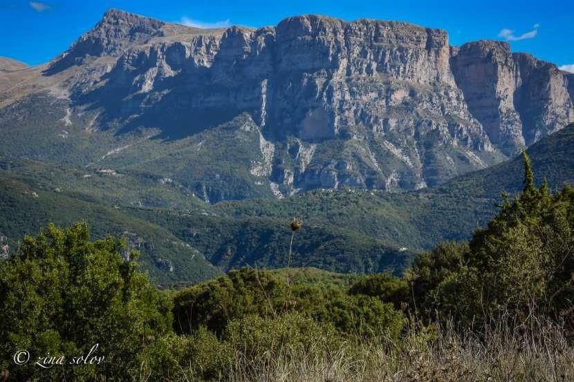
אחרי עשר דקות הליכה בירידה לקניון הגענו להתחלת הנביעות והתחלנו לצעוד במים, אין טעם לנסות לשמור על רגליים יבשות, גם ככה נרטב. הקניון ממש יפה ואני ממש מצטערת שלא יכלתי להביא מצלמה. אגב מבחינת ציוד ואוכל- קיבלנו תיק שק עמיד מים ובו בקבוקי שתיה ומיכל עם חטיפי אנרגיה ויכלנו לשים שם אם את הכריכים שהבאנו) פרט לזה לא כדאי לקחת שום דבר, אפילו את המפתחות לרכב השארנו אצל המפעילים שלא יצאו איתנו.
ובחזרה למסלול, הגענו לנקודת האימונים, שם המדריך הראה לנו איך להחזיק את החבל ואיך לדרוך ולהישען אחורה על משקל הגוף, ברגע שקולטים את הטכניקה (בעיקר להישען אחורנית ולשחרר לאט את החבל) הירידות ממש לא מסובכות.
וכך הגענו למפל הראשון, החצי (הכבד יותר) ירד ראשון בהצלחה רבה, אחריו פיצקה האמיצה (שלא שוקלת כלום אז אפשר גם ככה להוריד אותה בקלות), צוציק אחריה ואני בסוף, האדרנלין בשמיים וכיף אדיר. נוחתים ישר למים הקפואים, בקיץ זה צינון מבורך מהחום הכבד, עכשיו קצת פחות נעים אם כי האדרנלין מחמם. מזל שהיינו לבד כי כל ירידה לוקחת זמן, מדריך אחד יורד ומאבטח למטה, השני למעלה ועד שכולם יורדים מחכים בסבלנות. המפל השני יותר גבוה אם כי אנחנו כבר יותר מנוסים. במפל השלישי בכלל לא נעזרנו בחבל אלא בידיים- לצדדים ועם הרגליים יורדים לאט לאט בנקיקון צר וישר לתוך מפל משגע. משם צעדנו עוד קצת במים, בקיץ כיף לטבול את כל הגוף אבל עכשיו קר. כשהגענו למפל האחרון (17 מטר) עצרנו לנשנוש (עד שהמדריכים מכינים את הציוד לירידה) שם כבר מרגישים את הירידה, החצי ירד, פיצקה וצוציק חוברו לאומגה ובעצם התגלשו למטה (טוב הם לא שוקלים כלום), אמרתי שגם אני רוצה אומגה אבל לא זרמו איתי… בכל מקרה הירידה האחרונה היתה הכי כיפית, ממש לאורך המפל, מצד שני כבר קלטתי את הטכניקה וזה באמת ממש זרם.
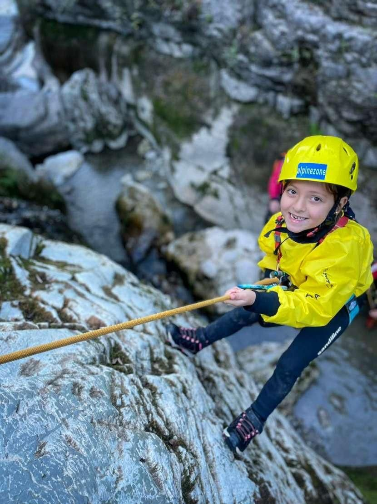
שם נפרדנו ממדריך אחד וטיפסנו בסולם גנבים צר חזרה למעלה ומשם צעדנו את כל העליה חזרה עד הרכב, כמובן שפיצקה נפלה וקיבלה מכה בברך אבל צעדה בגבורה. העליה מעט קשה (בעיקר כי האדרנלין נרגע כבר ומרגישים את העייפות) מצד שני מזג האוויר התחמם אז דווקא זה שהיינו רטובים הקל על העליה בשעות החמות יותר. סה״כ לקח לנו כ-4 שעות, פעילות לא זולה כלל אבל הרבה יותר מאתגרת ומלאת אדרנלין מהראפטינג, כולנו נהננו (החצי לעולם לא יודה בזה אבל גם הוא נהנה). בחניה החלפנו בגדים ונעליים (אז תבואו עם נעליים שאתם יודעים מראש שירטבו ויקח להם כמה ימים טובים להתייבש).
אנחנו כבר בפפיגו מה לא נשאר לטייל בסביבה?
לצוציקים אין כוח לשוטט בעיירה זה די ברור, לכן נסענו לבורות המים של פפיגו (או בורות רוגובו) הנמצאים ממש בין הכפר פפיגו למיקרו פפיגו. מדובר בגבי מים שניתן לשחות בהם או לטבול, בעונה הזו הם די רדודים אז אל תצפו לבריכות של ממש. חנינו, חצינו את הכביש ומיד נגלה נוף הגבים, הולכים ביניהם ובסופם יש מפל אליו לא הגענו.
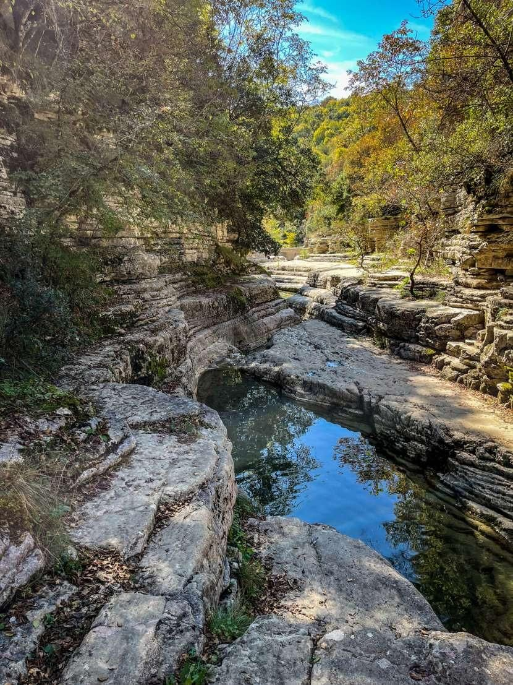
מצאנו גב נחמד לפיקניק צהריים, אחר כך הצוציקים טבלו רגליים (כי לא הספיק להם מים להיום) שימו לב שהגבים מאוד מחליקים, צוציק הספיק להחליק ולהרטב כולו (לפחות בחר להירטב ביום בו יש בגדים להחלפה ברכב אז לא כזה נורא).
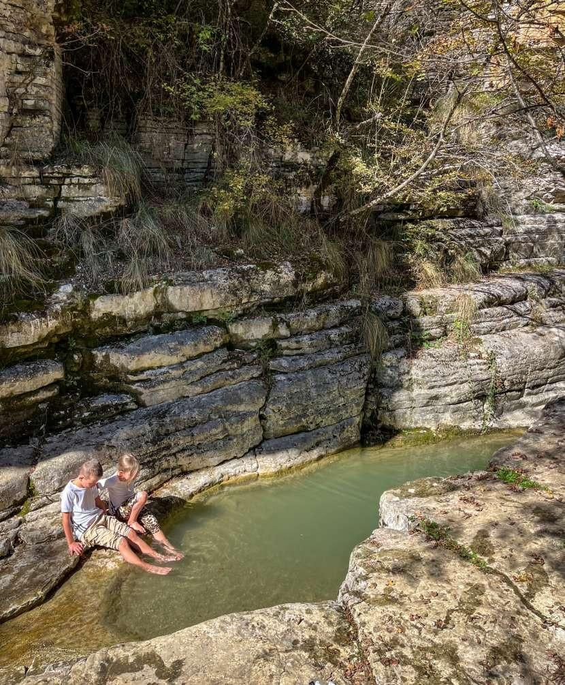
משם קפצנו לביקור בכפר מיקרו פפיגו (פפיגו העליון או הקטן)- זה נראה שהוא הכי גבוה מבין הכפרים של זגוריה אבל לא! הכפר ורדטו גבוה יותר ושוכן בגובה 1300 ומשהו מטר בעוד מיקרו פפיגו רק 969.
מיקרו פפיגו הוא כפר קטן וחמוד עם נוף יפיפה על הסביבה, ממנו יוצאים גם מסלולים לקניון ויקוס ולאגם הדרקון. הסתובבנו קצת בכפר ועצרנו לקפה ועוגה. חלמתי על עוגת תפוזים טעימה כזאת ועסיסית ולכן הזמנתי עוגת תפוזים, אבל כנראה מחוץ לעונה לא נשארו עוגות תפוזים עסיסיות אלא רק ספוג חסר טעם.
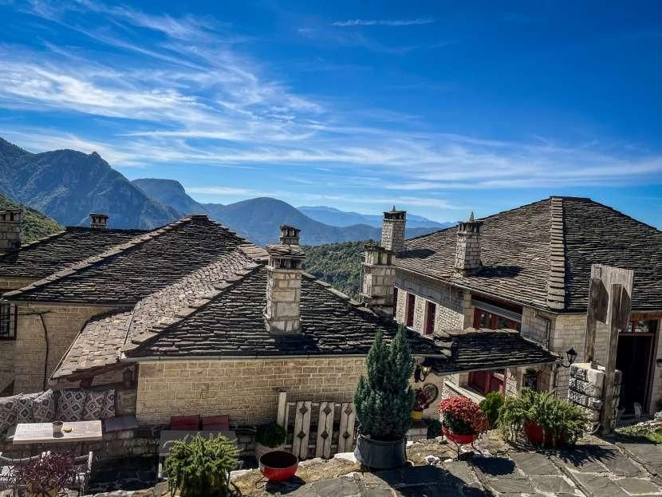
רציתי לעצור לסיבוב בכפר פפיגו אבל קיבלתי וטו משלושתם, האמת אם לא מתכננים על עוד ישיבה בבית קפהֿ או מסעדה (ויש כאלה בשפע בפפיגו) אין באמת טעם להסתובב ברחובות העיירה. לכן התחלנו את הנסיעה חזרה בכביש הנחש (הפעם הצוציקים היו בלי טאבלטים אז אפילו הם התפעלו מהנוף והסיבובים), עצרנו שוב בגשר אריסטי, צבע המים של נהר הוידומאטיס על רקע עצי השלכת כלכך מהפנט ומזג האוויר כלכך נעים שחובה לנצל את זה. התיישבנו בכיף על שפת הנחל, הצוציקים טבלו רגליים ואז ניסו להקפיץ אבנים, אנחנו סתם ישבנו וספגנו את האווירה הנעימה הזו, עם כל הטירוף בארץ כבר לא זוכרת מתי פשוט ישבנו ככה בנינוחות, בלי טלפונים, בלי דאגות, רק להנות מהרגע.
חזרנו לדירה שלנו וכבר לא נשאר לנו כוח לכלום, מזל שגם השכנים בדיוק חזרו כך שהילדים נעלמו באחת הדירות לשחק ואנחנו המבוגרים ישבנו בכיף על כוס ייו, ארוחת ערב ולישון.
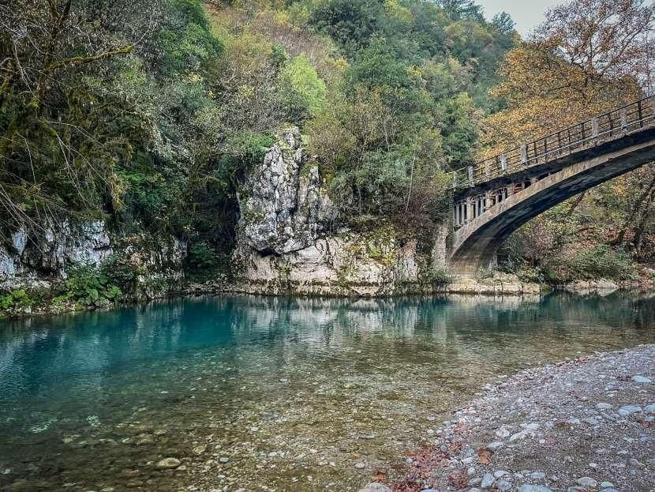
15.10.24: קניון ויקוס
היום התכנון היה לעשות יום רגוע יותר אחרי המסלול של אתמול, אבל אחרי ארוחת בוקר משותפת עם השכנים החלטנו שעדיף יהיה שנעשה היום את המסלול של קניון ויקוס ומעיינות הוידומאטיס יחד (ככה הילדים פחות יאכלו לנו את הראש). מדובר במסלול לא ארוך (2.5 ק״מ) היוצא מהכפר ויקוס, אבל, המסלול בירידה של משהו כמו 600-700 מטר גובה, וכמובן את מה שיורדים צריך אחר כך לעלות.ֿ
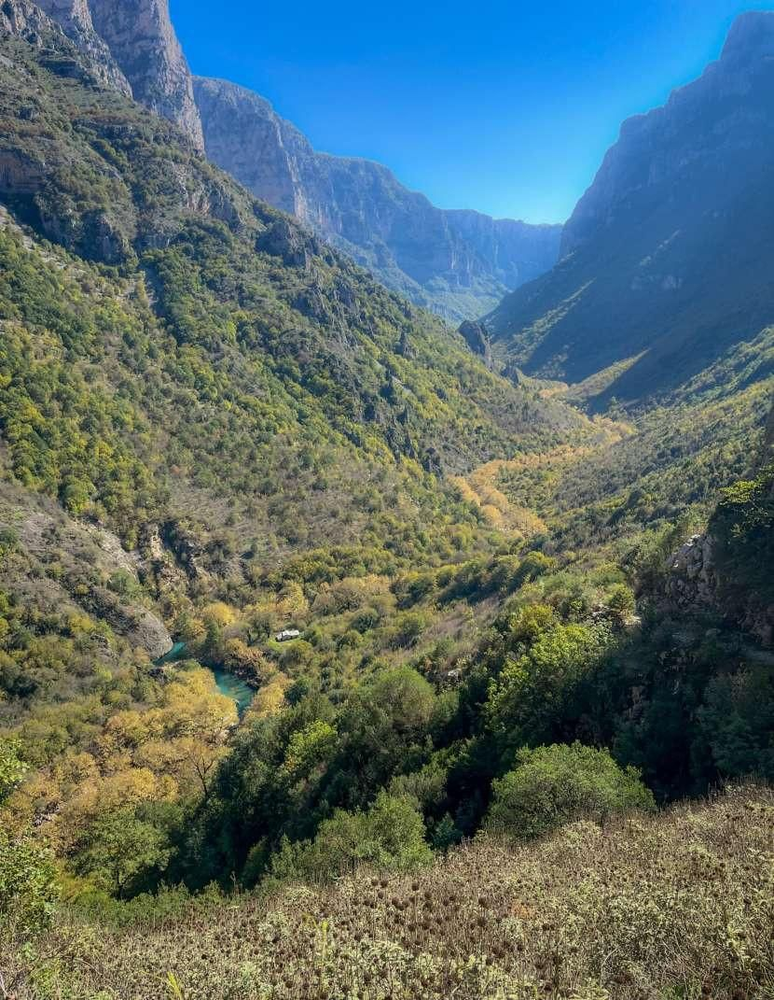
כאן אני עוצרת שניה להמליץ על אפליקציה מדהימה שגילינו בטיול לצ׳כיה והיא mappy.cz מדובר באפליקציה צ׳כית שמראה את כל השבילים באירופה ובעזרתה ממש ניתן לתכנן מסלולי טיול.
הגענו לכפר ויקוס, ממש בכניסה לכפר נמצאת הירידה למסלול והתחלנו לרדת לתוך הקניון, הנוף משגע, הירידה לא קשה בכלל אם כי יש מקומות שניתן בקלות להחליק אז שימו לב. בכניסה למסלול יש שלט שמפרט את המסלולים שיוצאים משם אבל לא במרחק אלא בזמנים- למשל עד למנזר זו הליכה של חצי שעה (לא באמת), עד מונודנדרי 6.5 שעות וכו, כאמור לא יודעת כמה הזמנים האלה נכונים, לנו הירידה לקחה כ-40 דקות.
כשיורדים ניתן להמשיך בשביל עד לקניון עצמו ולמעיינות או לפנות בחדות שמאלה (ולכן כדאי להיעזר באפליקציה שלא תפספסו את הפניה) למנזר ומשם לנהר עם מים טורקיזיים משגעים.
היות וכבר ירדנו את כל הדרך המשכנו עד למעיינות הוידומאטיס, מצאנו המון סלעים בתוך הקניון וכן כמה תיירים שמחפשים את המעיינות כמונו. בהמשך הבננו כי בעונה זו לא רואים את הנביעות וכן שערוץ הקניון יבש (המים נמצאים בין ינואר לאפריל). עדיין שווה לרדת לקניון ולו בשביל החוויה, הסלעים הענקיים יחד עם עצי השלכת וההרים הנישאים ממעל נותנים תחושה אמיתית לעוצמת הטבע.
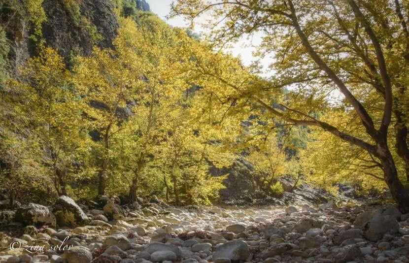
אין כמו סלע גדול וטוב בשביל מנוחה ונשנוש בוקר קל, ולאחר מכן חזרנו לשביל ופנינו ימינה (כשבאים ממול זה שמאלה) לכיוון המנזר, פחות מעשר דקות הליכה הגענו למנזר קטן וחביב שהצוציקים נהנו להכנס לשם בחיפוש אחר אוצרות. וממש מאחורי המנזר בירידה קלה מגיעים לגן עדן.
מי נהר הוידומאטיס בצבע שבחיים לא ראיתי, טורקיז אמיתי, שקוף וצלול שפשוט מהפנט אותך ומזמין להיכנס למים הקפואים. כמובן שהתיישבנו לנו על הגדה (היו שם גם לא מעט אנשים אם כי בשיא העונה נראה לי המקום עמוס). הצוציקים והחברים מיד הורידו נעליים והתיישבו לפיקניק משל עצמם בזמן שטובלים רגליים במים הקפואים. אני והחצי עשינו סשן צילומים קטן שגרם לחצי להחליק וליפול למים (אתמול הוא כעס של צוציק שלא הקשיב והחליק בגבי המים- קארמה!), בדיעבד דווקא הוא הרוויח כי בעליה הבגדים הרטובים ציננו אותו.
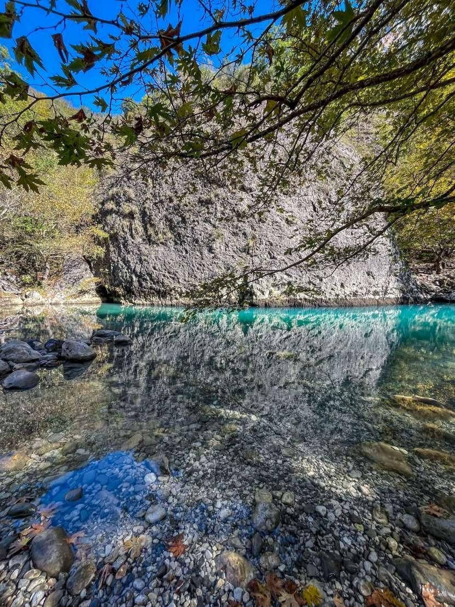
בילינו במקום כחצי שעה עד שהשמש תזוז מעט מערבה ותייצר יותר צל לקראת העליה חזרה המחכה לנו.
המסלול מאוד חשוף לשמש ולכן ביום חם לא הייתי ממליצה ללכת (אלא מאוד מוקדם בבוקר או אחר הצהריים). התחלנו את הדרך חזרה, הצוציקים רצו קדימה, לא הפסיקו לפטפט ועצרו לנוח רק כשאנחנו המבוגרים נזקקנו לעצירה להסדיר את הנשימה. הורים יקרים שימו לב, הילדים שלכם יכולים ללכת מסלולים ארוכים וקשים בלי בעיה כלל, הם מקטרים כי משעמם להם, תביאו להם חברים והם לא יראו אתכם ממטר! את העליה עשינו ב-50 דקות, סה״כ המסלול לא נורא למי שרגיל ללכת ולא חושש מעליות- בסוף גם העליה נגמרת.
כמובן שאחרי מאמץ כזה מגיע לכולנו פינוקים, ואיזה מזל שממש ממול לכניסה למסלול יש מסעדונת, גם היא כבר מתכוננת לשנת חורף אבל עדיין יש שם כמה גלידות, מילקשיייק וקפה, ונוף חביב. כמובן שאחרי מסלול כזה, ועוד עם העייפות של אתמול די סיימנו את האטרקציות להיום, חזרנו לדירה לעשות כביסות, ובעיקר לנוח.
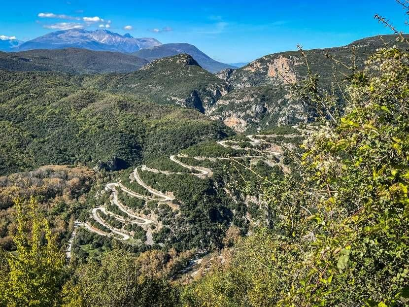
בערב החלטנו לבדוק את מונודנדרי, אנחנו כבר ישנים שם כמה ימים ולא באמת טיילנו בעיירה, רק סביב הכיכר ובדרך לתצפית וזהו. יצאנו עם השקיעה לשוטט בסמטאות, הגענו לחלק העילי של העיירה שגם שם יש מעט מסעדות וחנויות מזכרות, הצטיידנו בקצת מזכרות, מצאנו גינת שעשועים קטנה ליד הכנסיה שבעיירה ופשוט הלכנו לאיבוד בין השבילים של הכפר. בערב קנינו לנו עוגות וקינוחים מבית קפה שנמצא בכיכר ממש ליד הבית (איך קרה האסון שגילינו אותו רק עכשיו?!) והעברנו ערב נעים בבית החביב שלנו.
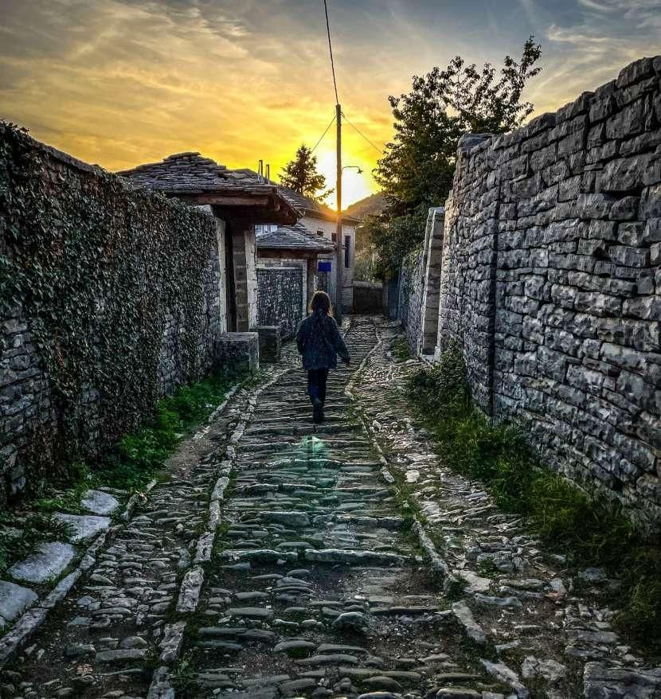
16.10.24: שבילים, מדרגות וגשרים
אחרי יומיים אינטנסיביים של מסלולים, היום התכנון הוא יותר רגוע. בבוקר אנחנו נפרדים מהשכנים שלנו שממשיכים לדרכם בעוד שלנו יש עוד לילה אחד בדירה המקסימה הזו. אחרי שפיצקה התגברה על הפרידה מחברתה החדשה יצאנו לדרך לכפר ורדטו.
ורדטו הוא הכפר הכי גבוה בזגוריה ונמצא בצידו המזרחי של קניון ויקוס, בדרך עברנו ליד הגשרים המפורסמים של הכפרים קיפי וקואקולי אבל נעצור שם בדרך חזרה. עברנו גם סמוך לכפר קפצובו וזכינו לראות את מדרגות ורדטו- עצרתי לצילום זריז. הדרך לורדטו שונה מעט מהדרכים במערב זגוריה, יש יותר יערות ועצים וגם מרגישים שגבוה יותר. הכפר עצמו די קטן ולא ממש טיילנו שם אלא ישר המשכנו לשביל לתצפית בלוי.
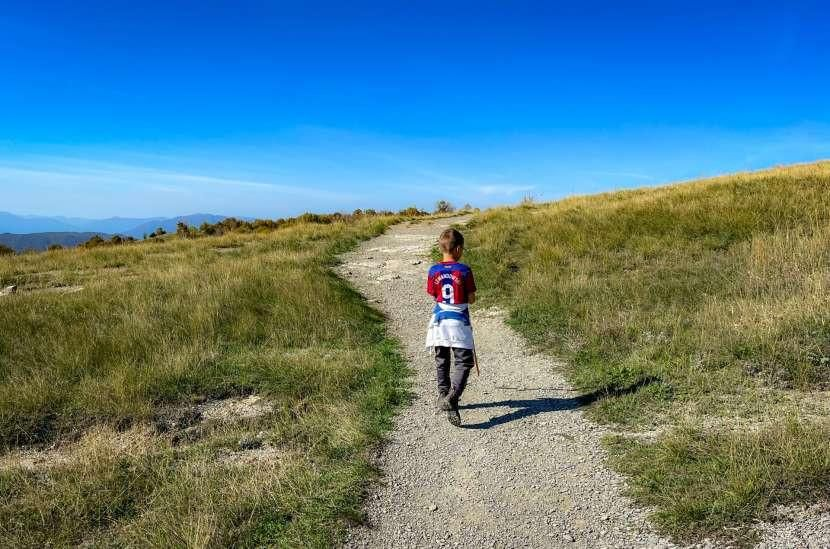
ברגע שנכנסים לכפר וממשיכים לכיוון בלוי עוברים בטברנה קטנה, אני ממליצה לחנות בחניה ליד כי בהמשך הדרך לתצפית מלאה במהמורות (עם רכב גבוה פחות בעייתי למרות שראיתי גם רכבים קטנים שממשיכים עד החניה אבל בשביל עוד 7 דקות הליכה לא נראה לי שצריך להסתכן ולדפוק את הרכב).
חנינו ויצאנו למסלול, צוציק לקח איתו מקל הליכה מהדירה שלנו, מקל זגורי אמיתי מגולף עץ (הילד נפצע בבוקר בבוהן אז לדבריו נזקק למקל הליכה). כאמור 7 הדקות הראשונות הן הליכה בכביש עפר עד לחניה הקרובה יותר לתחילת המסלול. המסלול עצמו לבלוי לא קשה כלל, מדובר על קילומטר לכיוון גג חצי שעה הליכה (לכיוון). המסלול חביב בדרך יש נוף יפה אם כי הוא לא מרשים בעיני כלל.
פיצקה לא הפסיקה לקטר (הילדה שקיפצה אתמול כמו עז הרים בעליות בקניון ויקוס, לא הפסיקה לקטר בהליכה מישורית וקלילה). התצפית עצמה יפיפיה אבל לא שונה משמעותית מאוקסיה/ויקוס או אפילו מונודנדרי. לצערי לא ניתן להעביר בתמונות את תחושת העוצמה והגובה שמרגישים כשצופים מטה לקניון צריך להיות שם ולחוות את זה. ליד התצפית המסודרת של בלוי יש פיצול קטן לתצפית על חלק נוסף בקניון, שימו לב אין שם מעקה ואפשר ממש להתקרב לשוליים, אני היחידה שהיה לה אומץ לעשות את זה וזה אכן מדהים, בזהירות יתרה כמובן ובטח לא ביום שיש רוח אבל התחושה מטורפת.
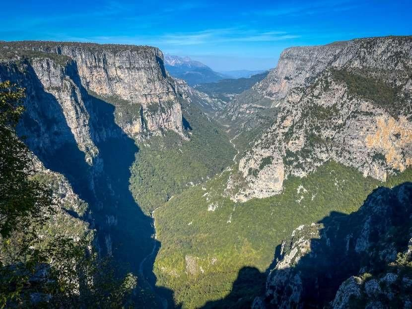
הדרך חזרה עברה מהר ובקלות, החלטנו לעצור בקפיטריה שליד החניה ולנשנש משהו בקטנה, הילדים רצו גלידה, אני ראיתי מבחר פאים שנראים מושלמים והחלטתי לטעום את פאי הפטריות. ואו הוא היה כלכך טעים! צוציק רצה לטעום גם (לפחות ילד אחד אוהב לטעום דברים חדשים) מסתבר שגם לו היה ממש טעים כי הוא חיסל את הפאי שלי, הזמנתי עוד אחד וגם חצי ממנו הילד חיסל.
אחרי התרעננות רצינו לעשות את מדרגות ורדטו, מאוד התלבטתי מאיפה ללכת, האם לרדת מורדטו ולעלות חזרה או לעלות מקפצובו עד שימאס ולחזור. השכנים שלנו שניסו לעשות את המסלול לפני יומיים אמרו שמורדטו יש הליכה לא קצרה עד המדרגות ותכלס הם לא באמת ראו אותן מהכפר, לכן החלטנו לנסות ולעלות מהכפר קפצובו. נסיעה קצרצרה והגענו לחניה קטנה שממנה יוצא השביל. התחלנו ללכת בשביל שהלכתי בו בבקור כדי לצלם את המדרגות, הנוף יפיפה והמדרגות ממש משתלבות עם הסלע ואם לא מחפשים אותן לא רואים אותן כלל. תיצפתנו על המדרגות רק כדי להבין שעד תחילתן יש לנו עוד חתיכת הליכה למטה בהר, ואז לחצות גשר ורק אז להגיע לתחילתן ולהתחיל לעלות- את ההלוך עוד היינו מושכים אבל אחר כך לחזור את זה? הרי עד התצפית שאנחנו עומדים יש עליה לא קטנה אם יורדים מטה… אני והילדים המשכנו עוד קצת למטה רק כדי להוכיח לעצמנו שבאמת אין סיכוי שנצליח לעשות את המסלול הזה היום. בדיעבד הייתי מותרת על תצפית בלוי לטובת הטיפוס במדרגות, אם היינו מתחילים איתן על הבוקר נראה לי היינו מצליחים בלי בעיה.
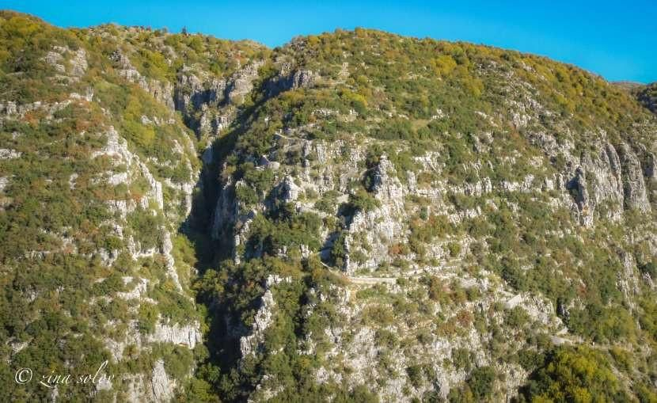
בכל מקרה, התצפית יפה ושעת הצהריים הגיע, אז אני אשת החיל צועדת בעליה לכיוון הרכב כדי להביא את האוכל לפיקניק במקום היפה הזה, הפיקניק היה מוצלח והכל נאכל. היום היה מאוד חם ביחס לימים האחרים והחום נותן את אותותיו, הצוציקים כבר די עצבניים ואין להם כוח לכלום.
נסענו לכיוון הגשרים: פלאקה ופלאקידס בעל 3 הקשתות. את פלאקה קל לראות מהכביש אז יצאתי רק אני לצלם אותו. הגשר יפה ומרשים ממש רק חבל שבעונה זו ערוץ הנחל יבש. משם המשכנו לגשר פלאקידס בעל 3 הקשתות, הגשר מאוד מרשים ויפיפה, הצלחנו להוציא את הצוציקים מהרכב לתמונה ושיטוט על הגשר אבל זהו הם כבר איבדו את זה היום כך שלצערי לא כלכך מיצינו כמו שתכננתי את סיורי הגשרים, פחות כיף להסתובב עם צוציקים זועפים ולהתחנן לתמונה. זהו, עם כל הרצון שלי לדקור עןד גשרים החום גמר גם עלי היום, שני גשרים מספיק ודי, גם ככה ערוצי הנחל פה יבשים וזה מצטלם פחות יפה, ראינו כבר מספיק גשרים בזגוריה.
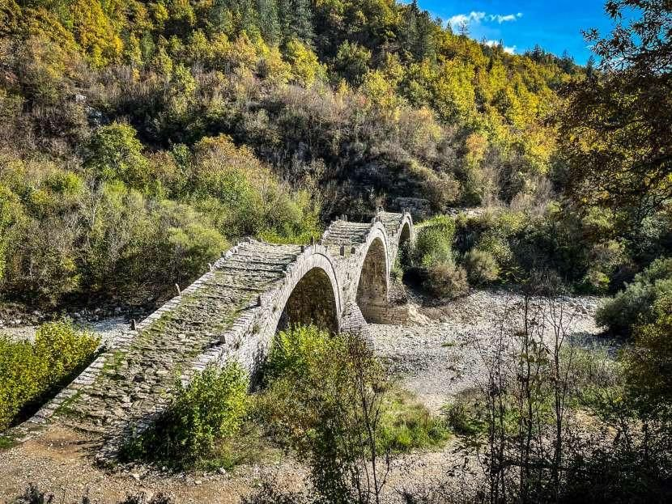
חזרנו לדירה לערב אחרון, לצוציקים מנוחה עם סרט בטאבלט, לנו מנוחה עם ספר או טלפון. בערב יצאתי לסיבוב עם פיצקה בעיירה, בזמן שהבנים נשארו לנוח, לא הלכנו למסעדה כי העדפנו לחסל את כל האוכל שנשאר, גם ככה עוזבים מחר בבוקר.
השכבנו את הצוציקים לישון וישבנו בפאתיו וקישקשנו קצת עם בעלת הדירה השניה שהגיע לנקות, מסתבר שזה בית משפחתי שהיה שייך לחמותה (אמא של בעלה, שהוא ואחיו התאום חילקו את הנכס ביניהם, כל אחד קיבל חצי דירה וכל שנה המשפחה המורחבת מתכנסת בדירה למפגש). ברקע מתנגנת מוזיקה, מאוד לא אופייני למקום, התרגלנו לשקט, טוב נו בטח איזה הופעה לתיירים חשבתי לעצמי, החצי יצא לבדוק ואכן אמר שבכיכר יש הופעה, נגנים אנשים רוקדים ממש חביב. הצטערנו קצת שאי אפשר ללכת שנינו אבל לא נשאיר את הצוציקים לבד בדירה כשהם ישנים. המשכנו לשבת בנחת בחוץ ופתאום אני מקשיבה למנגינה וואלה זה מוכר לי ממש, מתרכזת עוד קצת- זו מנגינה יהודית, מה פתאום מנגנים ביוון מנגינה יהודית?! עכשיו הגיע תורי לחקור, יצאתי לכיכר (3 צעדים מהבית) ואכן מסיבה, אנשים רוקדים אבל האנשים האלה ישראלים (אנחנו כמו מגנט, אין סיכוי שישראלי לא יזהה ישראלי בחול), ניגשתי לאחת הדודות ושאלתי לפשר העניין, מסתבר שזו קבוצה מאורגנת של מבוגרים שמטיילים רגלית בהרים והיום לערב סוכות ארגנו להם הפתעה- מופע. נשארתי עוד קצת להקשיב וחזרתי חזרה לדירה, אחלה ערב סיום אירגנו לנו החברה.
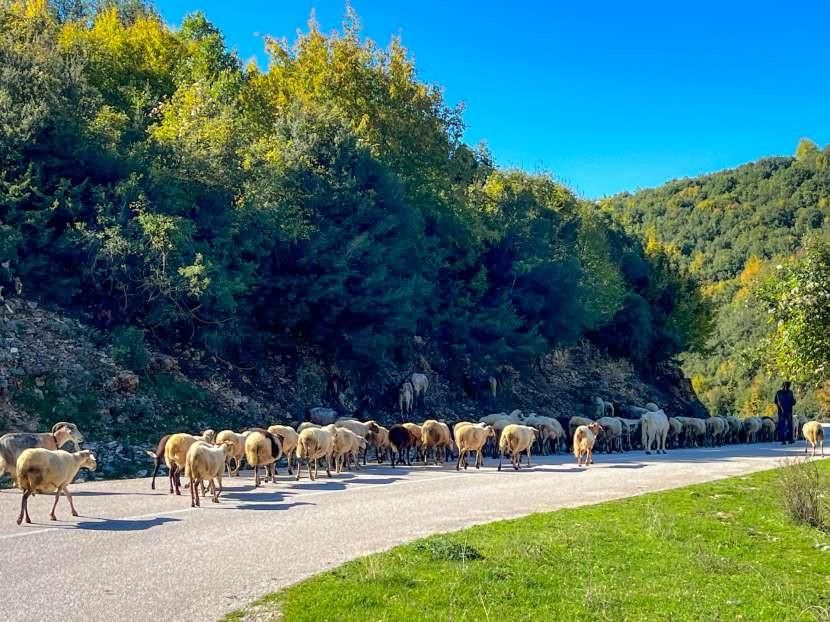
17.10.24: נהר האוס וקסטוריה החביבה
עוזבים בבוקר את הדירה המקסימה שלנו במונודנדרי, נשאר לנו די הרבה אוכל מהקניה המטורפת שעשינו לכן לקחנו איתנו מה שניתן כי יש לנו עוד יומיים בדירה בקסטוריה וזה יחסוך לנו עוד קניות. אנחנו גם נפרדים ממזג האוויר השמשי והיפה כי בימים הבאים הולך להיות קריר וסגרירי. ארוזים אנחנו יוצאים לדרך ליעד הראשון לשנו להיום- הגשר העתיק של קוניצה.
קוניצה היא עיירה די גדולה צפונית לזגוריה, היא לא נכללת בין כפרי זגוריה אך כלכך סמוכה שמשתלבת היטב בטיול. לאחר כשעה נסיעה הגענו לגשר העתיק. אין ספק שהוא אחד המרשימים ביותר, גשר ענקי וגבוה בעל קשת אחת מעל נהר האוס (הנהר הגדול השני בשמורת זגוריה).
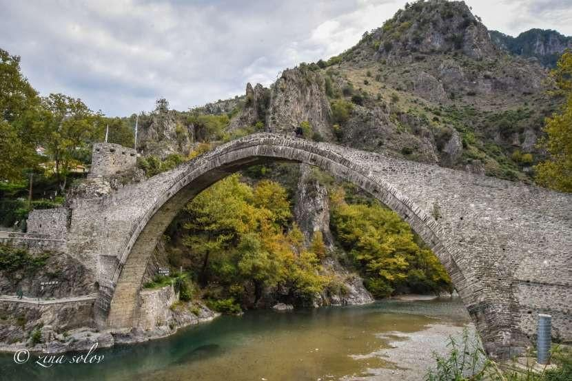
עלינו על הגשר לתצפית על קניון נהר האוס ומשם ירדנו לשיטוט קל על גדת הנהר. כמו הוידומאטיס גם פה ניתן לשחות ביום חם ואפילו טמפרטורת המים הרבה יותר נעימה וחמימה, אולם היום ממש סגרירי ולכן ויתרנו אפילו על טבילת רגליים. צוציק לקח איתו את משרוקית הציפורים שקנינו במונודנדרי (כשממלאים בה מים ונושפים היא משמיעה קולות ציוץ מקסימים), החלטנו לבדוק את יעילותה בטבע, באופן מפתיע מאוד כשצוציק שרק, מהירו הציפורים לענות לו.
מגשר קוניצה יוצא שביל הליכה מקסים שמהווה בעצם מסלול למנזרים Monastery Panagias Stomiou, מדובר על הליכה של 5 ק״מ מהחניה ליד הגשר ועד המנזרים. השביל שיוצא מגשר קוניצה מוליך לתוך קניון הנחל עם נופים משגעים של ההרים ממול, שקט וציוץ ציפורים. לאחר כקילומטר מגיעים לפיצול: שביל אחד מגיע למנזרים בדרך אתגרית שכוללת טיפוס לרכס ההר, והשביל השני הקל יותר מוליך למנזר דרך גדת הנהר. לצערי היות ומדובר במסלול של 4 ק״מ לכיוון לא היה לנו הזמן הדרוש לעשות אותו וחבל מאוד כי מקצת ההליכה שעשינו המסלול נראה משגע. אולם מצפה לנו עוד נסיעה ארוכה לקסטוריה ופשוט לא היינו מספיקים.
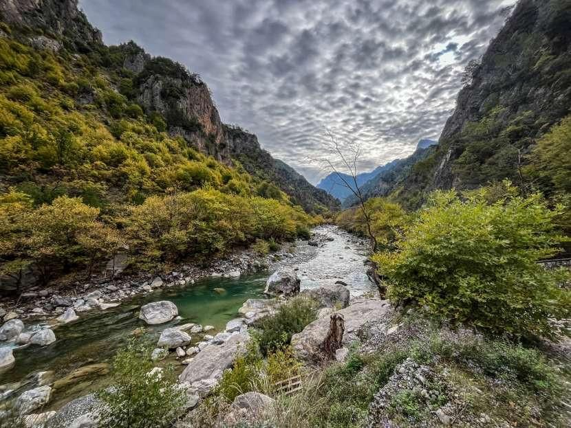
משם נסענו לסיבוב קצר בעיירה קוניצה, בעיקר לקנות לנו משהו לנשנש לדרך, לא רצינו מסעדה אבל רצינו משהו בקטנה שלא נהיה רעבים. סביב כיכר העיר יש כמה מסעדות ומאפיות, קנינו מאפים ומטעמים, קפה לחצי ויצאנו לדרך (לא מצאנו את קוניצה עצמה כעיירה ששווה סיבוב, פרט לגשר ולנוף הנהר לא ראינו שם משהו מיוחד)
יש 2 אופציות לנסוע לקסטוריה: הראשונה לחזור לכיוון יואנינה ולעלות על הכביש המהיר. השניה היא לנסוע דרך כביש 20, סמוך לגבול עם אלבניה, יוצא יותר קצר בקילומטראז וטיפה בזמנים אבל הכביש יותר מפותל. כמובן שבחרנו בכביש 20 ויאצנו לדרך. הכביש ארוך, מפותל, חוצה נהרות (על גשרים), דרך פסגות הרים, נופי שלכת מטריפים, יש קטע שלם של כביש שאין בכלל ישובים בסביבה וזה אנחנו והטבע, באמת ממליצה בחום לפנות את היום ופשוט להנות מהנסיעה. אם לא היינו עם צוציקים היינו עושים שפע עצירות צילום ותצפית בדרך. אחרי כמעט שעתיים עצרנו לתצפית והפסקת פירות במעבר הרים משגע ביופיו. וכשירדנו השתנה הנוף דרמטית, ליותר צחיח, פחות יערות אלא יותר שיחים וכמובן גם יותר ישובים- הגענו למחוז מקדוניה המערבית.
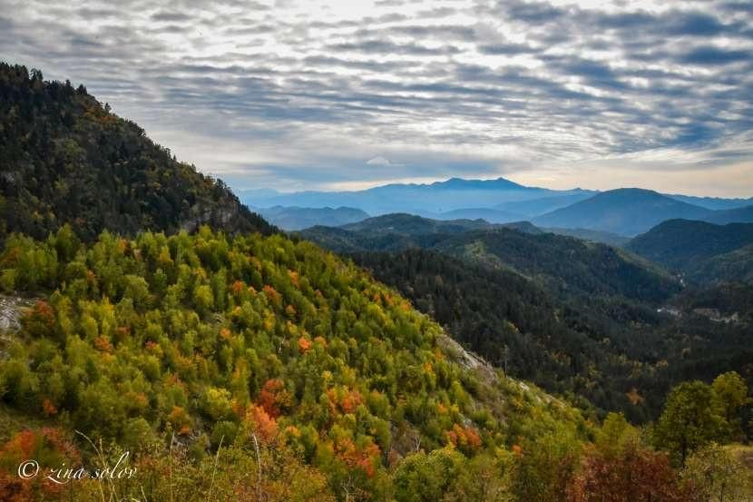
לקראת השעה ארבע הגענו לאגם קסטוריה, עדיין לא ראינו אותו בשיא הדרו כי המשכנו לכיוון -Neolithic Lakeside Settlement of Dispilio מוזיאון קטן וחביב להתיישבות מהתקופה הניאוליטית. אני חייבת לומר שבתמונות הוא נראה הרבה יותר מרשים, בפועל מדובר ב-6 בקתות משוחזרות שמציגות את החיים באיזור בתקופה ההיא. עלות כניסה 5 יורו למבוגר, הילדים בחינם. אמנם המקום אינו עצירת חובה בכלל אבל הילדים דווקא נהנו לפרוק אנרגיה אחרי הנסיעה הארוכה ומאוד התעניינו במיצגים.
משם נסענו לדירה החמודה שהזמנו הנמצאת במרכז קסטוריה ממש על האגם. לקחנו את המפתחות מחנות המעילים והפרוות מטה והתמקמנו בדירה החמודה שנשהה בה יומיים.
קצת על קסטוריה: העיר קסטוריה יושבת בלב אגם אורסטיאדה המקסים, באגם הסובב את קסטוריה ניתן למצוא שפע של עופות מים: שחפים, ברבורים, ברווזים. כביש באורך 9 קמ סובב את הרכס, בחלקו טיילת יפה, פינות ישיבה רבות, מקומות עגינה לסירות דייג ולדייגים חובבים, וגם שפע אפשרויות של פינות להתבודדות לשחיה ועוד. קסטוריה היא מרכז פרוות עולמי, Kastoras ביוונית, ועל שמם קרויה העיר (פעם היו שפע של בונים שחיו באגם ובנחלים ובעצם ״סיפקו״ את הפרווה לתעשיה הזו). כיום מביאים את הפרוות בעיקר מרוסיה ומה שנשאר כאן היא המומחיות בתפירת הפרוות. בעיר עצמה חיים כ 20000 תושבים, ועוד כ 15000 סביבה.
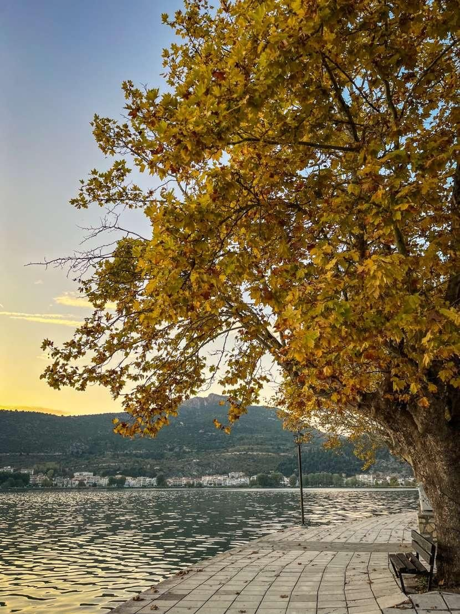
לקראת השקיעה יצאנו לתור את האגם והטיילת, העיר פשוט מקסימה והטיילת על האגם עוצרת נשימה. בכל העת יש שפע של עופות מים על האגם, אווזים מטיילים להם לאורך הטיילת ומידי פעם קופצים לאגם לטבילה, סביב האגם פזורים דייגים מקומיים שמצליחים לדוג שפע של דגים, הצוציקים מהופנטים מהדיג. וכמובן שכל הנוף הזה מתעצם ביופיו בזכות השקיעה היפה והשכלת שצובעת הכל בכתום.
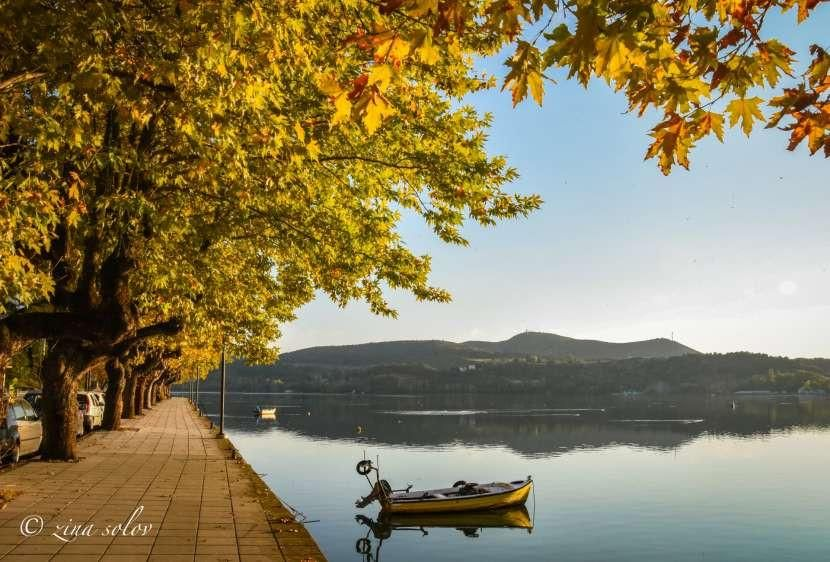
שוטטנו לנו בכיף כשעה אבל קרקורי הבטן הזכירו לנו שלא באמת אכלנו כמו שצריך היום, לכן התחלנו לחפש מסעדה בקרבת הדירה (לא קשה כי יש מלא) ועברנו ליד אחת שנראתה לנו מתאימה: En Kairó. נכנסנו לשם, התפריט נראה מזמין והמקום חביב- אפשר לשבת בחוץ על גדת הנהר או בפנים, העדפני בפנים גם כי קריר וגם כי השירות מהיר יותר ואנחנו מורעבים. המסעדה היתה ההפתעה הכי מוצלחת בטיול הזה, זוכרים כמה חיפשתי מנת פיטריות טעימה? זיכיתי בה פה, פטריות מטוגנות טעימות בטירוף, גם המקרל המעושן, האנשובי המטוגן ובכלל כל מנה שהזמנו היתה מוצלחת. רק אחרכך ראיתי שהיא אחת המסעדות עם הדירוג הכי גבוה בגוגל.
שבעים ומרוצים חזרנו לדירה לשנת לילה מצויינת ונעימה, החדשות מהארץ על חיסול חלאת החמאס ממש נתנו לנו סיבה טובה לחגוג היום.
18.10.24: יום סגרירי באגמים
קמנו ליום סגרירי, אמנם אין גשם אבל הסתיו באוויר. היום נוסעים לאגמי פרספה, מדובר על איזור די נידח בגבול הצפון מערבי של יוון עם אלבניה וצפון מקדוניה. תכננתי את הנסיעה שלנו לאזור קסטוריה בעיקר כדי שנוכל לבקר באגמי פרספה. ישנם 2 אגמים: פרספה הקטן אשר רובו נמצא בשטח יוון וזנבו גולש לשטח אלבניה, ופרספה הגדול שחלקו הקטן נמצא ביוון, ומרביתו מתחלק בין צפון מקדוניה ואלבניה. במקום יש שפע מסלולים לטיולי טבע, דייג ושייט באגמים ועיירות דייגים מקסימות- כך לפחות קראתי. בכלל אנחנו אוהבים מקומות יחסית נידחים ולא צפופי תיירים.
אחרי ארוחת בוקר יצאנו לדרך, מדבר על כ-50 דקות נסיעה עד האגם הקטן, סביבו יש כמה עיירות, אחת מהן היא מיקרולימני- אבל החלטנו לעבור שם דווקא בסוף המסלול. לכן נסענו ישירות ל-Agios Achillios.
העיירה אגיוס אכילוס נמצאת בעצם על אי קטן באגם פרספה הקטן, אל האי מוביל גשר צף.
חנינו ליד הגשר, במקום מלא מקומיים שמוכרים את מרכולתם, בחוץ קור אימים, רוח חזקה, ממש חורף. מזל שהבאתי לצוציקים חולצות טרמיות וסופטשלים, ואפילו איתן היה להם קר בראש בגלל הרוח. החצי בכלל קפא ועטף את הראש עם המעיל של צוציק, ואני עם סופטשל אבל לא הבאתי שום חולצה חמה מתחת, רק ארוך דק. מצד שני כשהולכים מתחממים וכך יצאנו להליכה על פני הגשר הצף.
האזור ממש מקסים, בניגוד לזגוריה הוא יחסית שטוח, האגם יפיפה ומלא בכל מיני עופות מים, ההליכה על הגשר הצף ממש כיפית כי הוא מקפץ עם הגלים. רק הקיטיורים של הצוציקים לא תרמו לחוויה, לכן מיד כשהגענו לאי פנינו לבית קפה חביב (והיחיד כנראה שעדיין פועל באי). שוקו חם ופאי גבינה מיד משפרים לכולנו את מצב הרוח, הבית קפה הוא גם מלון עם נוף משגע אז אם תרצו ממש להתבודד מאנשים על אי זה המקום!
מחוממים יצאנו לסיבוב באי המקסים, מעט התחמם בחוץ אם כי עדיין סגרירי. הסתובבנו קצת בין בתי האי שמבחינת הזמן נעצרו אי שם בשנות ה-60, תרנגולות קרקרו סביבנו. משם עלינו לכנסיה לתצפית יפה מראש הגבעה. ניתן עוד להמשיך לשוטט באי אבל הצוציקים מיצו. במזג אויר טוב ניתן לבלות שם שעות.ֿ
כשצעדנו חזרה על הגשר הצף ראינו סירה חולפת במהירות מהאי ובצד השני המתין אמבולנס, לפחות יש פינוי רפואי יעיל יחסית מהמקום.
התחנה הבאה שלנו היתה האגם הגדול ועיירת הדייגים Psarades. הדרך אליה מובילה בטיפוס לראש הגבעה וירידה מהצד השני, בדרך נגלה נוף משגע של האגם הגדול והאגם הקטן בדרומו וכמובן הגדה של מקדוניה הצפונית. העיירה די שוממת בעונה זו, חנינו ויצאנו לשיטוט, מיד קפצו עלינו מקומיים להציע סיבוב בסירה באגם, במזג אויר טוב אולי היינו מתפתים אבל ביום סגרירי כזה עם רוח חזקה החויה פחות מזמינה. במקום זה הלכנו להתיידד עם הפרות שרעו באחו ומשם שוטטנו קצת במזח החמוד, צוציק מצא סירה על החוף ומיד החליט לבדוק אותה מבפנים. ברחוב הראשי, הדי שומם, יש מסעדות דגים ממש מזמינות אבל הצוציקים לא זרמו. במקור תכננתי לעשות מסלול הליכה לכף רוטי שיוצא מהעיירה אבל לא במזג האוויר הזה. במקום, עצרנו לפיקניקון חביב על ראש ההר הצופה לשני האגמים שנסענו בו בדרך לעיירה.
ולסיום, לפני החזרה לקסטוריה עצרנו במיקרולימני- על האגם הקטן. גם היא שוממת בעונה זו. עצרנו במסעדה חביבה עם מרפסת דק על האגם, שתינו קפה וריבת דלעת בתוצרת מקומית שהיתה פשוט נפלאה. ספגנו עוד קצת מהנוף והאווירה הסתוית במקום אבל לא היה לנו כוח לטיולים רגליים.
לסיכום- אזור חביב ומקסים אם כי כדאי להגיע ביום שמש. הרגיש לי שהיופי והפוטנציאל של המקום קצת התפספס לנו בעיקר בגלל מזג האוויר שדי הוציא את החשק לטייל רגלית, אולי גם כי זה סוף הטיול וכולנו כבר טיפה עייפים.
חזרנו לקסטוריה למנוחת צהריים מאוחרת בדירה, ובערב יצאנו שוב לסיבוב סביב האגם, צפינו בברבורים והאווזים ובכלל הטיילת של קסטוריה פשוט מדהימה, כלכך כיף לטייל שם גם ביום סתווי וסגרירי. את ארוחת הערב אכלנו שוב במסעדת En Kairó- מה שטעים לא מחליפים.
19.10.24: חזרה לסלוניקי
קמנו מוקדם בבוקר כי יש לנו היום נסיעה ארוכה חזרה לסלוניקי, מחר בבוקר חוזרים ארצה. נורא קוייתי שניתקע כאן עוד קצת אבל זה לא הולך לקרות כנראה, וזה בעצם היום האחרון של הטיול שלנו.
כמו כל יום אחרון הוא מלווה ברגשות מעורבים, מצד אחד כבר כולנו עייפים ודי מיצינו ורוצים כבר הביתה, צוציקים מתגעגעים לחברים, מצד שני הנתק הזה מכל הבלגן בארץ ומחיי השגרה כלכך כיפי שהלוואי וימשך עוד קצת. ארזנו את המזוודות, העמסנו את התיקים וקדימה לדרך.
גם היום מזג האויר סגרירי ואפילו גשום, יום שמתאים לנסיעות ארוכות. התחנה הראשונה שלנו היא העיירה נימפאו ופארק הדובים ארקטורוס. אחרי שעה ורבע של נסיעה בכבישים כפריים מקסימים, שלקחו אותנו דרך ההרים, נסענו בתוך העננים הנמוכים, הגענו לעיירה החמודה ממש. בכניסה לעיירה יש מגרש חניה ענקי אבל בעונה זו ועם רכב אפשר להכנס יותר פנימה לעיירה. חנינו בכיכר הראשית ומשם יצאנו לדרך לפארק הדובים.
לא ניתן להגיע לפארק עם הרכב וממרכז העיירה יש שביל חביב המוביל לשם. מדובר על הליכה של רבע שעה גג, בשלב מסוים יוצאים מהעיירה ונכנסים ליער מקסים. הגענו לשמורה לקראת השעה עשר לסיור הראשון. גם הפעם לא הערכנו נכון את מזג האוויר כי ממש ממש קר בהרים ובשעת בוקר זו (כאמור כשהזריחה רק בשבע וחצי, האוויר עדיין לא התחמם אפילו).
הכניסה לילדים בחינם ואנחנו שילמנו 8 יורו, הכניסה כוללת גם את מרכז המבקרים בעיירה וכן את שמורת הזאבים הנמצאת 20 דקות משם. המקום אינו גן חיות ומהווה מקלט לדובים שעברו התעללויות בקרקסים או בידי אנשים פרטיים. כרגע יש שם 20 דובים. לצערנו הגיע למקום קבוצה ענקית של יוונים והסיור וההסברים היו ביוונית, אבל הפעם המדריכה ידעה אנגלית שוטפת והסבירה לנו הכל אחר כך וענתה על שאלות, הידעתם שכשדובים ישנים שנת חורף (גם פה הם ישנים, מתחילים להפחית להם מזון בהדרגה כדי לדמות מה שקורה בטבע ואז הם נכנסים לשנת חורף) הם יכולים להתעורר באמצע, לצאת לשיטוט ושוב לחזור לישון?
הסיור עצמו לוקח 30 דקות, ראינו קצת דובים אם כי קשה לצלם אותם. לסיכום חוויה, מקום חביב אם כי ממש לא חובה התרשמנו יותר ממקלט הדובים שהיינו ברומניה. חזרנו לעיירה, חלק מהמסעדות עדיין היו סגורות אבל מצאנו בית קפה חביב שמגיש פיצה ופאי וקפה, בול מה שאנחנו צריכים כדי להתחמם.
שוטטנו טיפה בעיירה המקסימה והמשכנו הלאה. תכננתי לעבור גם במקלט הזאבים אבל בגלל שלא התלהבנו ממקלט הדובים החלטנו לוותר ונסענו ישירות לידע הבא- אדסה, עיירת המפלים. לקח לנו שעה להגיע לאדסה כשבדרך התחיל גשם.
למזלנו כשהגענו לאדסה הגשם פסק. לא טיילנו בעירה אלא נסענו ישירות לפארק המפלים, יש חניה מסודרת ושפע חנויות ומסעדות ליד. באוויר ריח גשם טרי. מיד שמענו את רעש המפל האדיר. במקום יש מלא מפלונים קטנים, שבילי הליכה וספסלים. ירדנו למפל המרשים מאוד, ונכנסנו גם מאחוריו. במקום יש גם מערת נטיפים קטנה שנוצרה בזכות המפל, אבל ויתרנו. ירדנו במדרגות למטה לבסיס המפל, נרטבנו מעט מהרסס ושוטטנו עוד קצת בפארק המקסים.
את ארוחת הצהריים אכלנו במסעדה מול המפלים שנראת יוקרתית אבל באופן מפתיע היתה במחירים סבירים Katarraktes Complex - Restaurant. המנות היו מצויינות והצוציקים חיסלו הכל בשניה.
מאדסה יש לנו נסיעה של שעתיים עד המלון שלנו והחזרת הרכב. החלטנו קודם להגיע למלון, להוריד מזוודות ורק אז לנסוע לשטוף את הרכב ולהחזיר. לקראת שש בערב הגענו למלון שלנו, מלון חביב שישנו בו ב-2019 שיש לו חדרי משפחה מרווחים והוא נמצא 7 דק נסיעה משדה התעופה.
בגלל שהטיסה שלנו מחר בשמונה בבוקר, לא רצינו לשלם 40 יורו כדי להחזיר את הרכב מוקדם יותר (פותחים בשמונה בבוקר את תחנת ההשכרה) לכן החלטנו להחזיר ערב לפני. שטפנו את הרכב החזרנו בלי בעיות ולקחנו מונית בעלות של 10 יורו חזרה למלון שלנו. בגלל שאכלנו צהריים מאוחרות לא היינו רעבים אז נשנשנו מילקשייק במלון וסיימנו את הנשנושים שהבאנו איתנו. הזמנו מונית דרך המלון לבוקר לשדה התעופה בעלות של 20 יורו שתחכה לנו ב-6 בבוקר.
20.10.24: תם ונשלם
קמנו ברבע לשש בבוקר לחושך מוחלט, התלבשנו והתארגנו מהר, בלובי המונית כבר המתינה. נסיעה קצרצרה לשדה התעופה וכך הסתיים הטיול שלנו.
לסיכום, יוון השכנה הקרובה לא מפסיקה להפתיע. האוכל טעים, הטבע מדהים, האנשים חביבים, יעד מושלם! בטוח שעוד נחזור כי יש שפע מקומות שטרם חקרנו.